Crop Classification with Sentinel-1 SAR Time Series: Pixel Classifiers and Deep CNNs (VV/VH, May-October 2024)
Optical sensors need clear skies; synthetic aperture radar (SAR) does not.
Overview
Sentinel-1 is a C-band (5.4 GHz, \(\lambda\approx5.5\) cm) radar that images the surface day and night, through cloud, every 6 to 12 days. What it records is not colour but backscatter: how much of the transmitted microwave pulse returns to the antenna. Backscatter depends on the structure of the target (the size, orientation and water content of leaves, stems and soil) and so changes as a crop emerges, grows and senesces. A single SAR image says little about a crop, but a time series does.
This notebook classifies crops in the US Corn Belt (central Iowa AOI Corn_belt/aoi.geojson) in 2024 from five dual-polarisation (VV, VH) Sentinel-1 RTC scenes, May to October, with the 10 m USDA Cropland Data Layer (CDL) as labels, using geolattice.rsense.sar (speckle filtering, dB conversion) and geolattice.rsense.classify.image_classification (chips, pixel and deep-learning classifiers, evaluation).
How much of the corn/soybean/other-land pattern can five Sentinel-1 dates reveal, does a convolutional network that sees neighbourhoods beat a pixel classifier that sees only the temporal profile, and which dates, polarisations and speckle treatment matter?
SAR fundamentals. Backscatter, speckle and the equivalent number of looks (ENL), the decibel scale, the Lee and Quegan-Yu multi-temporal filters, and what VV and VH measure over crops.
Data. Five 10 m gamma-naught (RTC) scenes of 2024 and the CDL on a common grid.
Baselines and deep learning. A Random Forest on the 10-value temporal profile, then nine CNN, ResNet, EfficientNet, ConvNeXt, ViT and Swin architectures on \(32\times32\) px, 10-channel chips, explained with their mathematics.
SAR-specific experiments. Raw versus filtered input, VV versus VH, which acquisition date matters, and how early in the season a crop map can be made.
Evaluation. Spatial-block splits, bootstrap metrics, a wall-to-wall map checked pixel by pixel against the CDL, and an error analysis at field boundaries.
GPU recommended; the experiments shrink automatically on a CPU.
Core concepts
Learning objectives
Explain backscatter, speckle, ENL and the dB transform, and apply to_db, lee and multitemporal_speckle_filter.
Read the temporal backscatter signature of corn, soybeans and other land cover in VV, VH and VH−VV.
Build a co-registered SAR time-series tensor and CDL label raster, cut chips, derive scene labels, and split spatially without leakage.
Fit a pixel-based Random Forest baseline and evaluate it on the same held-out blocks as the CNNs.
Explain the building blocks and mathematics of LeNet, VGG, ResNet, EfficientNet, ConvNeXt, ViT and Swin, and compare their size, receptive field and cost.
Test which SAR ingredients matter (speckle filter, polarisation, acquisition dates) with repeated seeds, and train, reload and evaluate a final model.
Judge the result honestly: bootstrap intervals, seed SD, pixel-level map accuracy and errors at field edges.
Contents
Setup: libraries, device and data paths
Radar backscatter, speckle and crops: concepts and mathematics
Loading the 2024 Sentinel-1 time series and the CDL labels
Speckle filtering and the decibel scale
Temporal backscatter signatures of crops
From rasters to tensors: chips, scene labels, spatial split and class imbalance
Pixel-based baseline: Random Forest on the temporal profile
CNN architectures and the mathematics behind them
Data augmentation for overhead imagery
Loss functions: cross-entropy, weighted, focal and label smoothing
Training and experiments: architectures, SAR inputs, augmentation and losses
Final model: early stopping, checkpoint and TensorBoard
Inference and evaluation: chips, wall-to-wall map and field boundaries
Summary of the experiments
Interpretation, caveats and recommended recipe
Task and evaluation design
Data: five Sentinel-1 IW GRD scenes processed to terrain-corrected gamma-naught (\(\gamma^0\), linear power, 10 m, VV and VH), 21 May, 13 July, 18 August, 11 September and 17 October 2024 · CDL 2024 at 10 m (labels) · AOI Corn_belt/aoi.geojson (about 30 km \(\times\) 29 km).
Task.Scene (chip) classification: each \(32\times32\) px chip (320 m \(\times\) 320 m, 10 channels = 2 polarisations \(\times\) 5 dates, in dB) receives one label, the majority CDL class inside the chip. A pixel baseline and a pixel-level evaluation of the wall-to-wall map against the 10 m CDL complete the picture.
Honest evaluation. Neighbouring chips overlap (stride 16 px) and share spatial autocorrelation. We therefore split by 256 px spatial blocks (group_split) so that no block contributes to two splits, verified with check_split_isolation. The pixel Random Forest is trained and tested on the same blocks. All test blocks come from the same scene, so the numbers describe spatial generalisation inside the AOI and one season, not transfer to another year or region.
Data limits to keep in mind. The June acquisition is missing (no scene covered the AOI that month), so the series has a gap between 21 May and 13 July, which is exactly when corn and soybean canopies develop. The May scene comes from relative orbit 165 and the other four from orbit 63, so its incidence angle differs. The CDL is itself a model product (about 95 % accurate for corn and soybeans), not field truth.
Installation. This notebook needs installation option 6 (every GeoLattice module): pip install "geolattice[all]". See “Installation options” in the GeoLattice README.
Code
import json, time, warnings, tempfile # JSON, timing, warnings and temporary foldersfrom pathlib import Path # file pathswarnings.filterwarnings("ignore") # hide library warnings# arrays, tables, labelled rasters, raster I/O and vector dataimport numpy as np, pandas as pd, xarray as xr, rioxarray, geopandas as gpdimport matplotlib.pyplot as plt # figuresfrom matplotlib.colors import ListedColormap # class coloursimport torch # PyTorch: the networksimport geolattice.rsense.sar as s1 # GeoLattice SAR tools (speckle filters, dB conversion)import geolattice.rsense.classify.image_classification as ic # GeoLattice image-classification moduleCANDIDATES = [Path("../../../../Data/08_remote_sensing/08_09_image_classification/Corn_belt"), # the data folder, from the notebook folder or the repository root Path("Data/08_remote_sensing/08_09_image_classification/Corn_belt")]DATA =next((p for p in CANDIDATES if p.is_dir()), None) # the first candidate that existsif DATA isNone: # neither found# stop with a clear messageraiseFileNotFoundError("Run Jupyter from this notebook's folder or from the GeoLattice repository root.")S1_DIR = DATA /"Sentinel_1"# the Sentinel-1 folder# one scene per month, May to October 2024S1_FOLDERS = ["2024_05_20240521_165", "2024_07_20240713_63", "2024_08_20240818_63","2024_09_20240911_63", "2024_10_20241017_63"]CDL_PATH = DATA /"CDL"/"10_m"/"CDL_2024_10m.tif"# the 2024 CDL at 10 mAOI_PATH = DATA /"aoi.geojson"# the study-area polygon# every VV/VH file and the CDL ...for p in [S1_DIR / f /f"{pol}.tif"for f in S1_FOLDERS for pol in ("vv", "vh")] + [CDL_PATH, AOI_PATH]:ifnot p.exists(): # ... must existraiseFileNotFoundError(p) # stop if one is missingDEVICE ="cuda"if torch.cuda.is_available() else"cpu"# GPU when availableprint("torch", torch.__version__, "| device:", DEVICE, # PyTorch version and device"|", torch.cuda.get_device_name(0) if DEVICE =="cuda"else"CPU only (reduce EPOCHS / SEEDS below)")SEED =42# random seedic.set_seed(SEED) # reproducible numpy and PyTorch randomnessSCALE =1.0if DEVICE =="cuda"else0.4# CPU users: shrink the experiments# epochs and seeds of the experiments (fewer on a CPU)EPOCHS_ARCH, EPOCHS_ABL, SEEDS = (15, 12, [0, 1, 2]) if DEVICE =="cuda"else (4, 4, [0])
Radar backscatter, speckle and crops: concepts and mathematics
Backscatter and the decibel scale
A SAR image stores, for each pixel, the received power\(I\). After radiometric calibration and terrain correction (the RTC products used here) the pixel holds the gamma-naught backscatter coefficient,
\[\gamma^0=\frac{\sigma^0}{\cos\theta_i},\qquad \sigma^0=\frac{\langle |S|^2\rangle}{A_{\text{ground}}}\ \ (\text{linear power per unit area}),\]
where \(\theta_i\) is the local incidence angle. Dividing by \(\cos\theta_i\) removes most of the incidence-angle dependence of vegetated surfaces, so values from different parts of the swath, and from different orbits, are comparable. Backscatter spans orders of magnitude (here \(10^{-3}\) to \(0.5\)), so it is analysed on the logarithmic decibel scale,
Typical values: smooth water \(<-20\) dB, bare soil and crop canopies \(-25\) to \(-10\) dB in VH and \(-18\) to \(-5\) dB in VV, buildings and rough surfaces above \(-5\) dB.
Speckle
The pixel is the coherent sum of echoes from many scatterers inside the resolution cell. Their phases interfere randomly, so even a perfectly homogeneous field looks grainy. This speckle is multiplicative,
where \(\sigma\) is the true backscatter and \(L\) the number of looks (independent averages). The equivalent number of looks of a homogeneous area is estimated as
For \(L\) independent looks the coefficient of variation is \(1/\sqrt{L}\), so a single-look pixel has a CV of 1 and an ENL of 1, whereas Sentinel-1 GRD at 10 m has an ENL of roughly 4 to 5 (the product is multi-looked). Speckle also biases the dB mean: the expectation of the logarithm of a gamma variable is
with \(\psi\) the digamma function (about \(-1.3\) dB for \(L=4.4\)). Averages should therefore be taken in the linear domain and converted to dB afterwards, which is what the filters below do.
Speckle filters
The Lee filter (1980) estimates the noise-free value as a weighted mix of the local mean \(\bar z\) and the centre pixel \(z\),
In a homogeneous window \(\sigma_z^2\approx\bar z^2\sigma_n^2\), so \(b\to0\) and the output is the local mean; at an edge the local variance is large, \(b\to1\) and the pixel is kept. s1.lee(img, size, enl) implements it for one date.
The Quegan-Yu multi-temporal filter (2001) uses all \(N\) co-registered dates. Each date keeps its own local mean \(E[I_k]\) (any spatial filter \(E[\cdot]\)) while the speckle is averaged across dates,
The ratio \(I_i/E[I_i]\) is, to first order, pure speckle, which is independent between dates (the acquisitions are 4 to 8 weeks apart), so it is averaged over \(N\) dates; the temporal signal sits in \(E[I_k]\) and is left untouched. s1.multitemporal_speckle_filter reduces speckle by up to \(\sqrt N\) without the spatial blurring of a single-date filter of the same strength.
What VV and VH see over crops
VV (vertical transmit, vertical receive) is dominated by surface scattering from soil and by attenuated returns through the canopy; it responds to soil moisture and roughness, and to vertical stalks.
VH (cross-polarised) arises mainly from volume scattering inside the canopy, where leaves and stems depolarise the wave. It rises with biomass and canopy water content and is less sensitive to the soil.
Derived quantities: the cross-polarisation ratio\(\mathrm{CR}=\gamma^0_{VH}/\gamma^0_{VV}\) (in dB simply \(\mathrm{VH}_{\mathrm{dB}}-\mathrm{VV}_{\mathrm{dB}}\)) and the radar vegetation index \(\mathrm{RVI}=4\gamma^0_{VH}/(\gamma^0_{VV}+\gamma^0_{VH})\).
Corn versus soybeans. Corn grows to 2 to 3 m with thick stalks and large leaves and holds much more biomass than soybeans (about 1 m). Mid-season it is therefore expected to have higher volume scattering (VH) than soybeans, and the two crops differ in their rate of change during emergence and senescence. How large these differences are in practice, and whether five dates are enough to separate them, is what the experiments measure.
Loading the 2024 Sentinel-1 time series and the CDL labels
Acquisition inventory
The inventory.csv produced by the download script lists, for each month, the scene chosen (the scene with the best AOI coverage, from the dominant relative orbit when possible). In 2024 June has no acquisition covering the AOI, and the May scene had to come from another orbit.
Code
inv = pd.read_csv(S1_DIR /"inventory.csv") # the download inventory# the five scenes used, in time orderinv24 = inv[inv["folder"].isin(S1_FOLDERS)].set_index("folder").loc[S1_FOLDERS]# date, orbit, platform and AOI coverageprint(inv24[["date", "relative_orbit", "orbit_state", "platform", "aoi_footprint_cover"]].to_string())# months of 2024 without a usable sceneprint("\nmonths 2024 without an acquisition:", inv[(inv.year ==2024) & (inv.status !="downloaded")]["month"].tolist())DATES = pd.to_datetime(inv24["date"].values) # acquisition datesDLAB = [d.strftime("%d %b") for d in DATES] # short date labelsT =len(DATES) # number of dates
Each scene is read as float32; the nodata value \(-32768\) (and non-positive values, which cannot be converted to dB) become NaN. All five scenes share one UTM zone 15N grid, which we verify. The AOI polygon is compared with the raster footprint.
Code
def read_pol(folder, pol): # one polarisation of one scene as linear power# read it as float32 a = rioxarray.open_rasterio(S1_DIR / folder /f"{pol}.tif").squeeze(drop=True).astype("float32")return a.where((a !=-32768) & (a >0)) # -32768 and non-positive values are no datalin = {} # polarisation -> (time, y, x) stackfor pol in ("vv", "vh"): # VV and VH layers = [read_pol(f, pol) for f in S1_FOLDERS] # the five datesfor l in layers[1:]: # every date ...# ... must be on exactly the same gridassert l.shape == layers[0].shape and np.array_equal(l.x.values, layers[0].x.values) and np.array_equal(l.y.values, layers[0].y.values) lin[pol] = xr.concat(layers, dim="time").assign_coords(time=DATES.values) # stacked along timeref = lin["vv"].isel(time=0).drop_vars("time") # the grid as a reference rasteraoi = gpd.read_file(AOI_PATH).to_crs(ref.rio.crs) # the AOI in the same CRSH, W = ref.shape # grid size# stack size, CRS and pixel sizeprint(f"stack: {T} dates x 2 pol x {H} x {W} px | CRS {ref.rio.crs} | pixel {abs(float(ref.rio.resolution()[0])):.0f} m | "f"{H * W /1e6:.1f} M pixels per layer")# AOI area, raster footprint and complete-data shareprint(f"AOI polygon area {aoi.area.sum() /1e6:,.0f} km2 | raster footprint {H * W *100/1e6:,.0f} km2 | "f"share of pixels with data (all dates, both pol): {np.isfinite(lin['vv']).all('time').mean().item():.4f}")print("linear power percentiles (1 / 50 / 99 %), per date:") # header# 1st, 50th and 99th percentiles per date and polarisationprint(pd.DataFrame({pol: [np.nanpercentile(lin[pol].isel(time=t).values[::7, ::7], [1, 50, 99]).round(4).tolist() for t inrange(T)]for pol in lin}, index=DLAB).to_string())
stack: 5 dates x 2 pol x 2911 x 3032 px | CRS EPSG:32615 | pixel 10 m | 8.8 M pixels per layer
AOI polygon area 863 km2 | raster footprint 883 km2 | share of pixels with data (all dates, both pol): 1.0000
linear power percentiles (1 / 50 / 99 %), per date:
vv vh
21 May [0.0167, 0.0606, 0.2175] [0.0027, 0.0081, 0.0459]
13 Jul [0.0269, 0.1021, 0.2912] [0.0059, 0.0242, 0.0677]
18 Aug [0.036, 0.1374, 0.4078] [0.0087, 0.0304, 0.0804]
11 Sep [0.0275, 0.1158, 0.4104] [0.0066, 0.0274, 0.1045]
17 Oct [0.01, 0.0438, 0.1982] [0.0013, 0.0069, 0.0391]
CDL labels recoded to six land-cover classes
The 10 m CDL raster (Albers, EPSG:5070) is reprojected to the Sentinel-1 grid with nearest neighbour (class codes must not be interpolated). The CDL’s detailed crop legend is merged into six classes; corn and soybeans make up about 90 % of the AOI, so the problem is strongly imbalanced.
Code
# CDL on the 10 m grid (nearest neighbour)cdl = rioxarray.open_rasterio(CDL_PATH).squeeze(drop=True).rio.reproject_match(ref, resampling=0)code_map = {1: 0, 5: 1, 176: 2, 121: 3, 122: 3, 123: 3, 124: 3, 190: 4, 195: 4} # CDL code -> class idCLASSES = ["Corn", "Soybeans", "Grass/pasture", "Developed", "Wetland/forest", "Other"] # the six classesCOLORS = ["#e6c229", "#2a9d3c", "#b9e08b", "#d7301f", "#1f5fbf", "#7f7f7f"]K =len(CLASSES) # number of classescmap = ListedColormap(COLORS) # their colour mapraw = cdl.values.astype(int) # CDL codes as integerslab = np.full(raw.shape, 5, "int16") # everything else is "Other" (5)for k, v in code_map.items(): # the mapped codes ... lab[raw == k] = v # ... get their classlab[raw ==0] =-1# no datashare = pd.Series(lab[lab >=0]).value_counts(normalize=True).sort_index() # share of each class# as a small tableprint(pd.DataFrame({"class": CLASSES, "pixel share": share.reindex(range(K)).round(4).values}).to_string(index=False))# the largest CDL codes inside "Other"other = pd.Series(raw[lab ==5]).value_counts(normalize=True).head(5).round(3)# report themprint("largest CDL codes inside 'Other':", other.to_dict(), "(36 = alfalfa, 28 = oats, 141 = deciduous forest)")
class pixel share
Corn 0.4879
Soybeans 0.4085
Grass/pasture 0.0482
Developed 0.0372
Wetland/forest 0.0087
Other 0.0096
largest CDL codes inside 'Other': {28: 0.24, 141: 0.229, 36: 0.187, 111: 0.162, 131: 0.086} (36 = alfalfa, 28 = oats, 141 = deciduous forest)
Speckle filtering and the decibel scale
We build three versions of the same 10-channel dB image and compare them in the experiments of the Training and experiments: architectures, SAR inputs, augmentation and losses section:
Version
Processing
raw
no filter, linear power \(\to\) dB
lee
single-date Lee filter, \(5\times5\), ENL 4.4, per date and polarisation
mt
multi-temporal Quegan-Yu filter with Lee \(5\times5\) as the spatial filter, applied across the five dates, per polarisation
Filtering is done in linear power, and the result is converted to dB afterwards (see Speckle). The ENL is measured over a \(40\times40\) px block that the CDL labels as a single class (soybeans or corn) and whose reflectance looks homogeneous: it is an indicative number, because a real field still has texture and soil variation, which lowers the estimate.
Code
ENL0 =4.4# assumed number of looks of the RTC productt0 = time.time() # start the timer# multi-temporal, single-date Lee and unfiltered stacksflt = {"mt": {p: s1.multitemporal_speckle_filter(lin[p], spatial="lee", size=5, enl=ENL0) for p in lin},"lee": {p: xr.concat([s1.lee(lin[p].isel(time=t).drop_vars("time"), size=5, enl=ENL0) for t inrange(T)], dim="time") .assign_coords(time=DATES.values) for p in lin},"raw": lin}print(f"filters computed in {time.time() - t0:.0f} s") # time takenBAND_NAMES = [f"{pol.upper()}{d}"for pol in ("vv", "vh") for d in DLAB] # band names: polarisation and datedef to_bands(d): # a filtered stack -> 10 bands in dB# every date of both polarisations, in dB parts = [s1.to_db(d[pol].isel(time=t)).drop_vars("time") for pol in ("vv", "vh") for t inrange(T)]# as one (band, y, x) arrayreturn xr.concat(parts, dim="band").assign_coords(band=BAND_NAMES).astype("float32")IMG = {k: to_bands(v) for k, v in flt.items()} # all three versionsprint({k: (tuple(v.shape), f"{v.nbytes /1e9:.2f} GB") for k, v in IMG.items()}) # their shapes and memoryfrom scipy.ndimage import uniform_filter # moving-window meanfor cls_id, nm in [(1, "Soybeans"), (0, "Corn")]: # a pure soybean block and a pure corn block# pixels whose 40 x 40 neighbourhood is all one class pure = uniform_filter((lab == cls_id).astype("float32"), 40, mode="constant") >0.999 cand = np.argwhere(pure) # their positionsiflen(cand): # found one# the middle candidate; top-left corner of the block r0, c0 = (int(v) for v in cand[len(cand) //2]); r0 -=20; c0 -=20 blk = (slice(r0, r0 +40), slice(c0, c0 +40)) # the 40 x 40 windowprint(f"\nENL over a pure {nm} block (rows {r0}:{r0 +40}, cols {c0}:{c0 +40}):") # header rows = {} # one row per polarisationfor pol in ("vv", "vh"): # each polarisation# equivalent number of looks of each version on 18 August rows[pol.upper()] = {k: s1.enl_estimate(flt[k][pol].isel(time=2).values[blk]) for k in ("raw", "lee", "mt")}# as a tableprint(pd.DataFrame(rows).round(1).T.rename(columns={"raw": "raw", "lee": "single-date Lee", "mt": "multi-temporal Lee"}).to_string())if nm =="Soybeans": BLK_HOM = blk # keep the soybean block for later
filters computed in 8 s
{'mt': ((10, 2911, 3032), '0.35 GB'), 'lee': ((10, 2911, 3032), '0.35 GB'), 'raw': ((10, 2911, 3032), '0.35 GB')}
ENL over a pure Soybeans block (rows 1476:1516, cols 353:393):
raw single-date Lee multi-temporal Lee
VV 6.6 31.7 18.0
VH 6.7 26.7 16.0
ENL over a pure Corn block (rows 1346:1386, cols 390:430):
raw single-date Lee multi-temporal Lee
VV 5.6 21.0 14.7
VH 7.0 33.4 17.9
Reading the ENL table. An ENL near 4 to 6 for the raw 10 m data confirms the speckle model: single pixels carry a noise standard deviation of about \(1/\sqrt{\mathrm{ENL}}\approx45\) % of their mean. Both filters raise the ENL. ENL measures noise reduction only; it does not tell how well edges and small fields are kept. The zoom below shows what the filters do to the image, in dB.
Code
r0, c0 =1100, 1300# corner of the zoom windowzoom = (slice(r0, r0 +260), slice(c0, c0 +260)) # a 260 x 260 pixel zoomt_show =2# 18 Augfig, ax = plt.subplots(2, 4, figsize=(15, 7.6)) # two rows of four panels# the three versionsfor j, (k, ttl) inenumerate([("raw", "raw"), ("lee", "single-date Lee 5x5"), ("mt", "multi-temporal Lee 5x5")]):# VH zoom ax[0, j].imshow(IMG[k].sel(band=f"VH {DLAB[t_show]}").values[zoom], cmap="gray", vmin=-27, vmax=-8) ax[0, j].set_title(f"VH {DLAB[t_show]} - {ttl}") # title# VV zoom ax[1, j].imshow(IMG[k].sel(band=f"VV {DLAB[t_show]}").values[zoom], cmap="gray", vmin=-18, vmax=0) ax[1, j].set_title(f"VV {DLAB[t_show]} - {ttl}") # title# CDL of the zoomax[0, 3].imshow(np.where(lab <0, np.nan, lab)[zoom], cmap=cmap, vmin=-0.5, vmax=K -0.5, interpolation="nearest"); ax[0, 3].set_title("CDL 2024 (zoom)")bins = np.linspace(-32, 5, 150) # histogram bins in dBfor k, col in [("raw", "tab:red"), ("lee", "tab:blue"), ("mt", "tab:green")]: # each version# VH histogram of the whole scene ax[1, 3].hist(IMG[k].sel(band=f"VH {DLAB[t_show]}").values[::5, ::5].ravel(), bins=bins, histtype="step", color=col, label=f"VH {k}", density=True)# VV histogram ax[1, 3].hist(IMG[k].sel(band=f"VV {DLAB[t_show]}").values[::5, ::5].ravel(), bins=bins, histtype="step", color=col, ls="--", label=f"VV {k}", density=True)# labels and legendax[1, 3].set_xlabel("dB"); ax[1, 3].set_title("distribution of the whole scene"); ax[1, 3].legend(fontsize=7)for a in ax.flat[:7]: a.axis("off") # no axes on the image panelsplt.tight_layout(); plt.show() # arrange and draw
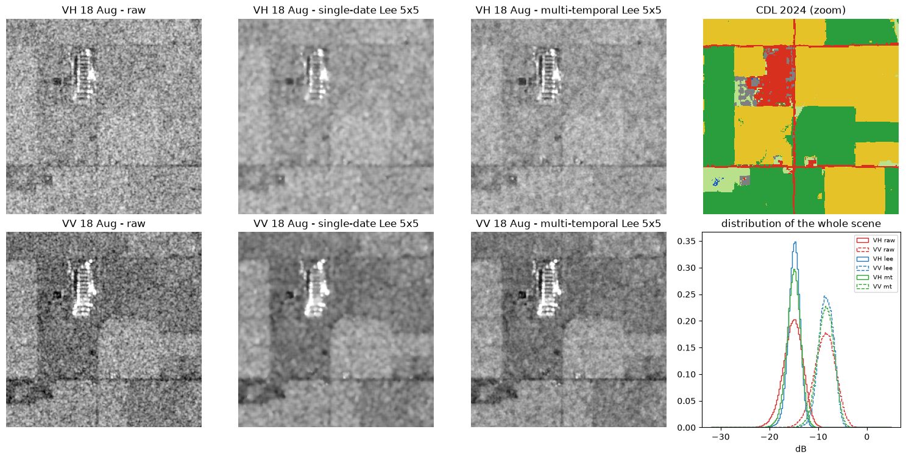
Temporal backscatter signatures of crops
Before any classifier, we look at what separates the classes. For 400,000 random pixels of the multi-temporal-filtered stack we plot the median and inter-quartile range (IQR) of VV, VH and VH−VV per class and date. The false-colour composite assigns three dates of VH to the three colour channels; a pixel is coloured by when it is bright: crops that grow late look different from permanent cover.
Code
rng = np.random.default_rng(0) # random generatormt_np = IMG["mt"].values # (10, H, W)valid_px = np.isfinite(mt_np).all(0) & (lab >=0) # pixels with all bands and a labelidx = rng.choice(np.flatnonzero(valid_px.ravel()), 400_000, replace=False) # 400,000 random pixelsfeat = mt_np.reshape(10, -1)[:, idx].T # (n, 10)labs = lab.ravel()[idx] # their labelsvv, vh = feat[:, :T], feat[:, T:] # VV and VH columnsfig, ax = plt.subplots(1, 3, figsize=(15, 4.2)) # three panelsx = np.arange(T) # date positionsfor k inrange(K -1): # each class except "Other"# VV, VH and their differencefor a, v, ttl in [(ax[0], vv, "VV (dB)"), (ax[1], vh, "VH (dB)"), (ax[2], vh - vv, "VH − VV (dB)")]: q = np.percentile(v[labs == k], [25, 50, 75], axis=0) # quartiles over the pixels of the class# median line and interquartile band a.plot(x, q[1], "-o", color=COLORS[k], label=CLASSES[k], ms=4); a.fill_between(x, q[0], q[2], color=COLORS[k], alpha=0.12) a.set_title(ttl) # titlefor a in ax: a.set_xticks(x); a.set_xticklabels(DLAB, rotation=30); a.grid(alpha=0.3) # date labels and gridax[0].legend(fontsize=8) # legendplt.tight_layout(); plt.show() # arrange and drawd = pd.DataFrame({"date": DLAB *2, "pol": ["VV"] * T + ["VH"] * T, # corn against soybeans, band by band"corn − soy (dB)": [np.median(feat[labs ==0, j]) - np.median(feat[labs ==1, j]) for j inrange(2* T)],"pooled SD (dB)": [np.sqrt((feat[labs ==0, j].var() + feat[labs ==1, j].var()) /2) for j inrange(2* T)]})# separation in pooled standard deviationsd["separation (d')"] = (d["corn − soy (dB)"] / d["pooled SD (dB)"]).round(2)print("Corn versus soybeans, per band (median difference relative to the pooled SD):") # headerprint(d.round(2).to_string(index=False)) # the table# VH of three dates as RGBrgbimg = np.stack([IMG["mt"].sel(band=f"VH {DLAB[i]}").values for i in (0, 2, 4)], -1)# stretch each date to 0-1rgbimg = np.clip((rgbimg - np.array([-26, -24, -26])) / np.array([12, 12, 12]), 0, 1)fig, ax = plt.subplots(1, 2, figsize=(12, 5.6)) # two panels# the multi-date compositeax[0].imshow(rgbimg); ax[0].set_title(f"VH false colour: R = {DLAB[0]}, G = {DLAB[2]}, B = {DLAB[4]}")# the CDLax[1].imshow(np.where(lab <0, np.nan, lab), cmap=cmap, vmin=-0.5, vmax=K -0.5, interpolation="nearest"); ax[1].set_title("CDL 2024 (recoded)")for a in ax: a.axis("off") # no axes# class legendax[1].legend(handles=[plt.Rectangle((0, 0), 1, 1, color=c) for c in COLORS], labels=CLASSES, loc="lower center", ncol=3, fontsize=8, bbox_to_anchor=(0.5, -0.13))plt.tight_layout(); plt.show() # arrange and draw
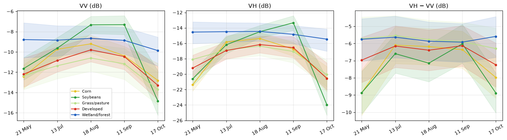
Corn versus soybeans, per band (median difference relative to the pooled SD):
date pol corn − soy (dB) pooled SD (dB) separation (d')
21 May VV -0.78 1.69 -0.46
13 Jul VV -0.11 1.51 -0.07
18 Aug VV -1.87 1.32 -1.42
11 Sep VV -3.08 1.48 -2.08
17 Oct VV 2.04 2.46 0.83
21 May VH -0.76 1.51 -0.50
13 Jul VH 0.37 1.56 0.24
18 Aug VH -0.89 1.25 -0.71
11 Sep VH -3.42 1.48 -2.31
17 Oct VH 3.47 2.65 1.31
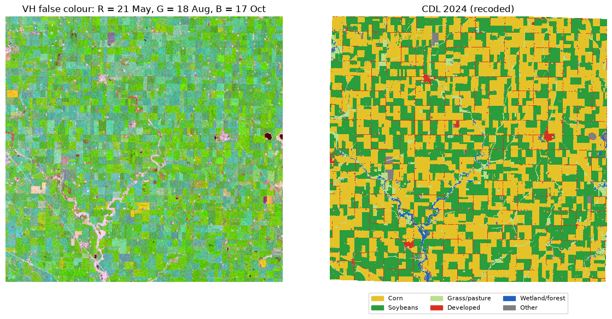
What the signatures say. The separation \(d'\) (median difference divided by the pooled standard deviation of the two classes) tells how many standard deviations apart the two main crops are at the level of one pixel. A value of 1 or more is a visible shift, but the distributions still overlap: a pixel-level classifier on one date would make many errors, which is why the next sections use all dates, then neighbourhoods. Developed land and forest/wetland stand out through high, almost seasonless backscatter (strong scatterers) and are expected to be easy.
From rasters to tensors: chips, scene labels, spatial split and class imbalance
Cutting 32 × 32 px image chips with extract_chips
extract_chips(image, samples, size=, max_nan_fraction=) cuts \(\text{size}\times\text{size}\) chips centred on map coordinates. We lay a regular grid of chip centres (stride 16 px, so chips overlap by half) over \(11\times11\) blocks of \(256\) px, tag each chip with its block id, and cut the multi-temporal-filtered stack. The raw and single-date-filtered versions are cut at the same positions by array slicing (checked against extract_chips), so the experiments in the Training and experiments: architectures, SAR inputs, augmentation and losses section differ only in the input processing.
Code
SIZE, STRIDE, BLOCK =32, 16, 256# 32 px chips, 16 px stride, 256 px blocksnb =min(H, W) // BLOCK # 11 x 11 blocksxs, ys = IMG["mt"].x.values, IMG["mt"].y.values # pixel-centre coordinatespts, bid, rc = [], [], [] # chip centres, block ids and positionsfor bi inrange(nb): # every block row ...for bj inrange(nb): # ... and columnfor r inrange(bi * BLOCK, (bi +1) * BLOCK - SIZE +1, STRIDE): # chip rows in the blockfor c inrange(bj * BLOCK, (bj +1) * BLOCK - SIZE +1, STRIDE): # chip columns in the block# centre, block id and position of the chip pts.append((xs[c + SIZE //2], ys[r + SIZE //2])); bid.append(bi * nb + bj); rc.append((r, c))pts, bid, rc = np.array(pts), np.array(bid), np.array(rc) # as arrayst0 = time.time() # start the timer# chips of the filtered stack, dropping any with a missing pixelXall, _, xy = ic.extract_chips(IMG["mt"], pts, size=SIZE, max_nan_fraction=0.0)# candidate centre -> indexcand = {(round(float(a), 3), round(float(b), 3)): i for i, (a, b) inenumerate(pts)}# index of each kept chipkeep = np.array([cand[(round(float(a), 3), round(float(b), 3))] for a, b in np.asarray(xy)[:, :2]])bid, rc = bid[keep], rc[keep] # their block ids and positionsdef cut(arr): # same chips from any (C, H, W) array, by slicing out = np.empty((len(rc), arr.shape[0], SIZE, SIZE), "float32") # empty chip arrayfor i, (r, c) inenumerate(rc): # every kept chip ... out[i] = arr[:, r:r + SIZE, c:c + SIZE] # ... sliced at its positionreturn out # the chips# the same chips for all three versionsXV = {"mt": Xall, "raw": cut(IMG["raw"].values), "lee": cut(IMG["lee"].values)}# slicing gives exactly the extracted chipsprint("slicing reproduces extract_chips:", bool(np.allclose(cut(IMG["mt"].values[:, :, :])[:50], Xall[:50], equal_nan=True)))lab_da = IMG["mt"].isel(band=[0]).copy(data=lab[None].astype("float32")) # the label map as a one-band rasterMall, _, _ = ic.extract_chips(lab_da, pts, size=SIZE, max_nan_fraction=1.0) # label chips at the same centresMall = Mall[keep, 0].astype(int) # kept label chips as integers# counts, time and memoryprint(f"candidate chips {len(pts):,} -> clean chips {len(Xall):,} ({time.time() - t0:.1f} s) | chip tensor {Xall.shape} float32 = {Xall.nbytes /1e9:.2f} GB "f"| three input versions | mask chips {Mall.shape}")
The label of a chip is the majority class of its mask chip,
\[y_i=\arg\max_{k}\;n_{ik},\qquad n_{ik}=\#\{\text{pixels of chip }i\text{ with class }k\},\qquad p_i=\frac{\max_k n_{ik}}{\sum_k n_{ik}}\;(\text{purity}).\]
Mixed chips (low purity \(p_i\)) are inherently ambiguous: a chip that is 40 % corn and 40 % soybeans cannot be labelled reliably from backscatter alone. We keep chips with \(p_i\ge 0.6\) and with less than 20 % background pixels, and report how much this matters.
Code
valid = (Mall >=0) # labelled pixels of every chipcounts = np.stack([(Mall == k).sum((1, 2)) for k inrange(K)], 1) # pixels of each class per chipy_all = counts.argmax(1) # majority classpurity = counts.max(1) / np.maximum(valid.sum((1, 2)), 1) # its shareok = (valid.mean((1, 2)) >=0.8) & (purity >=0.6) # chips at least 80 % labelled and 60 % pure# how many are keptprint(f"chips kept: {ok.sum():,} of {len(ok):,} ({ok.mean():.1%}) | median purity {np.median(purity[ok]):.2f}")XV = {k: v[ok] for k, v in XV.items()} # keep them in all three versionsX = XV["mt"] # the multi-temporal version is the defaulty, groups, chip_rc = y_all[ok], bid[ok], rc[ok] # labels, block ids and positions# chips per classprint(pd.DataFrame({"class": CLASSES, "chips": np.bincount(y, minlength=K), "share": (np.bincount(y, minlength=K) /len(y)).round(4)}).to_string(index=False))fig, ax = plt.subplots(1, 2, figsize=(11, 3.4)) # two panelsax[0].hist(purity, bins=30, color="#555"); ax[0].axvline(0.6, color="r", ls="--"); ax[0].set_title("Chip purity (majority-class share)"); ax[0].set_xlabel("purity")# chips per class on a log scaleax[1].bar(CLASSES, np.bincount(y, minlength=K), color=COLORS); ax[1].set_yscale("log"); ax[1].set_title("Class imbalance (log scale)"); ax[1].tick_params(axis="x", rotation=30)plt.tight_layout(); plt.show() # arrange and draw
chips kept: 22,193 of 27,211 (81.6%) | median purity 0.93
class chips share
Corn 12075 0.5441
Soybeans 9638 0.4343
Grass/pasture 309 0.0139
Developed 84 0.0038
Wetland/forest 21 0.0009
Other 66 0.0030
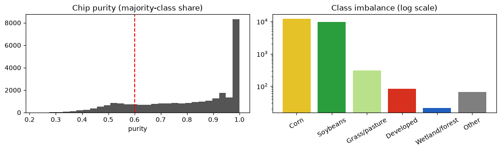
Spatial-block split and training-only normalisation
group_split(groups, test_size=, val_size=) assigns whole blocks to train/validation/test. check_split_isolation raises if any block appears in two splits. Neighbouring blocks still touch, so a small leakage along block edges remains; this is why the Training and experiments: architectures, SAR inputs, augmentation and losses section reports the SD over seeds and why the final numbers should be read as in-scene spatial generalisation. The Normalizer is fitted on training chips only: it z-scores each of the 10 channels, which also absorbs the constant offset between the May (orbit 165) and later (orbit 63) scenes.
Code
sp = ic.group_split(groups, test_size=0.2, val_size=0.2, seed=SEED) # 60 / 20 / 20 split by whole blockstr, va, te = sp.train, sp.val, sp.test # the three index sets# no block in two splitsic.check_split_isolation(train=np.unique(groups[tr]), val=np.unique(groups[va]), test=np.unique(groups[te]))print(f"train {len(tr):,} | val {len(va):,} | test {len(te):,} chips "# split sizes and block countsf"({len(np.unique(groups[tr]))}/{len(np.unique(groups[va]))}/{len(np.unique(groups[te]))} blocks) - isolation check passed")# chips per class and splitprint(pd.DataFrame({s: np.bincount(y[i], minlength=K) for s, i in [("train", tr), ("val", va), ("test", te)]}, index=CLASSES))norm = ic.Normalizer("zscore").fit(X[tr], band_axis=1) # per-band z-score from the training chips only# chip dataset of indices idxmk =lambda idx, tf=None: ic.ChipDataset(X[idx], y[idx], normalizer=norm, transform=tf)ds_tr, ds_va, ds_te = mk(tr), mk(va), mk(te) # the three datasetsld_tr = ic.as_loader(ds_tr, 128, shuffle=True, seed=SEED) # shuffled training batches# validation and test batchesld_va, ld_te = ic.as_loader(ds_va, 256, shuffle=False), ic.as_loader(ds_te, 256, shuffle=False)b =next(iter(ld_tr)) # one training batchprint("batch:", {k: (tuple(v.shape), str(v.dtype)) for k, v in b.items()}, # its tensors and scaled statistics"| train mean/std per band after z-score:", round(float(b["image"].mean()), 3), round(float(b["image"].std()), 3))fig, ax = plt.subplots(1, 3, figsize=(11, 4)) # three panelsbsplit = np.zeros(nb * nb) # split of every block# train 0, validation 1, test 2bsplit[np.unique(groups[tr])] =0; bsplit[np.unique(groups[va])] =1; bsplit[np.unique(groups[te])] =2missing = np.setdiff1d(np.arange(nb * nb), np.unique(groups)); bsplit[missing] = np.nan # blocks without chipsax[0].imshow(bsplit.reshape(nb, nb), cmap=ListedColormap(["#4c78a8", "#f2c14e", "#d7301f"]), interpolation="nearest")ax[0].set_title("256 px blocks: train / val / test") # titleax[1].imshow(rgbimg[:nb * BLOCK, :nb * BLOCK]); ax[1].set_title("VH false colour") # VH composite# CDLax[2].imshow(np.where(lab <0, np.nan, lab)[:nb * BLOCK, :nb * BLOCK], cmap=cmap, vmin=-0.5, vmax=K -0.5, interpolation="nearest"); ax[2].set_title("CDL")for a in ax: a.axis("off") # no axesplt.tight_layout(); plt.show() # arrange and draw
train 13,339 | val 4,454 | test 4,400 chips (73/24/24 blocks) - isolation check passed
train val test
Corn 7017 2518 2540
Soybeans 5938 1872 1828
Grass/pasture 251 27 31
Developed 64 20 0
Wetland/forest 19 1 1
Other 50 16 0
batch: {'image': ((128, 10, 32, 32), 'torch.float32'), 'label': ((128,), 'torch.int64')} | train mean/std per band after z-score: -0.042 0.949
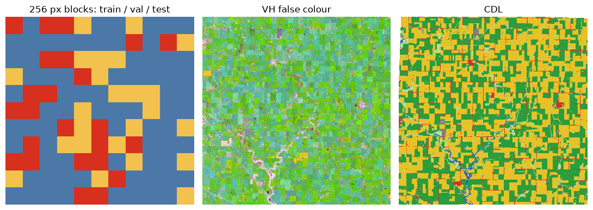
Class weights for imbalanced classes
With classes of very different frequency, plain cross-entropy is dominated by the majority class. class_weights converts counts \(n_k\) into weights with three recipes (normalised to mean 1):
\[w_k^{\text{inverse}}\propto\frac1{n_k},\qquad w_k^{\sqrt{\ }}\propto\frac1{\sqrt{n_k}},\qquad w_k^{\text{effective}}\propto\frac{1-\beta}{1-\beta^{\,n_k}}\ \ (\text{Cui et al., 2019; }\beta=0.999).\]
The “effective number of samples” \(E_n=(1-\beta^{n})/(1-\beta)\) accounts for the overlap between samples of the same class: more samples add less and less new information.
Code
# three class-weighting rulesW_ = {m: ic.class_weights(y[tr], num_classes=K, method=m) for m in ("inverse", "sqrt_inverse", "effective")}print(pd.DataFrame(W_, index=CLASSES).round(3)) # the weights per class
Pixel-based baseline: Random Forest on the temporal profile
A pixel classifier sees only the 10 numbers of one pixel (two polarisations \(\times\) five dates). It is the natural baseline for a deep network that sees a \(32\times32\) neighbourhood. A Random Forest of \(B\) trees predicts by majority vote,
where each tree \(T_b\) is grown on a bootstrap sample with a random subset of \(\sqrt{C}\) features tried at each split. train_pixel_classifier(X, y, model="rf", coords=, block_size=) fits the forest and, when map coordinates are supplied, also runs a spatial block cross-validation on the training pixels, so the CV score is not inflated by neighbouring pixels.
To compare fairly with the CNN, the forest is trained on pixels from the train and validation blocks of the Spatial-block split and training-only normalisation section and evaluated on pixels from the test blocks. We train it on the multi-temporal filtered stack and on the unfiltered stack, to isolate the value of speckle filtering for a pixel classifier. Training pixels are a random sample of 300,000 labelled pixels (all CDL classes, no purity screen, as the map user would experience).
Code
SUB =slice(0, nb * BLOCK) # the area covered by blocks# block id of every pixelblk_px = (np.arange(nb * BLOCK)[:, None] // BLOCK) * nb + (np.arange(nb * BLOCK)[None, :] // BLOCK)# training (and validation) blocks; test blockstr_blocks = np.unique(np.r_[groups[tr], groups[va]]); te_blocks = np.unique(groups[te])in_tr, in_te = np.isin(blk_px, tr_blocks), np.isin(blk_px, te_blocks) # their pixel maskslab_s = lab[SUB, SUB] # labels of that arearng = np.random.default_rng(1) # random generatorrr, cc = np.nonzero(in_tr & (lab_s >=0)) # labelled pixels in the training blockspick = rng.choice(len(rr), 300_000, replace=False); rr, cc = rr[pick], cc[pick] # 300,000 of themyx = np.c_[IMG["mt"].x.values[cc], IMG["mt"].y.values[rr]] # their map coordinatesdef fit_rf(img, n_est=200): # random forest on pixel time series, with spatial CV Xp = pd.DataFrame(img.values[:, rr, cc].T, columns=BAND_NAMES) # the 10 dB values of the sampled pixels t0 = time.time() # start the timer# fit with 4-fold spatial CV inside the training blocks rf, cv = ic.train_pixel_classifier(Xp, lab_s[rr, cc], model="rf", coords=yx, block_size=BLOCK *10.0, n_splits=4, seed=0, n_estimators=n_est, n_jobs=-1)# classify every pixel of the area pred = ic.predict_map(rf, img.isel(y=SUB, x=SUB), chunk_rows=256).values.astype(int)return rf, cv, pred, time.time() - t0 # model, CV table, map and timeRF = {} # results per input versionfor k in ("mt", "raw"): # filtered and unfiltered stacks rf, cv, pred, sec = fit_rf(IMG[k]) # fit and map m = in_te & (pred >=0) & (lab_s >=0) # test-block pixels with a prediction and a label# pixel accuracy report rep = ic.classification_report(lab_s[m], pred[m], labels=list(range(K)), class_names=dict(enumerate(CLASSES)), n_boot=0) RF[k] =dict(model=rf, pred=pred, rep=rep, cv=cv, mask=m) # keep everything# the scoresprint(f"RF on {k:3s} stack: test-block pixel OA {rep['overall_accuracy']:.4f} | kappa {rep['kappa']:.4f} | macro-F1 {rep['macro_f1']:.4f} "f"| spatial-CV (train blocks) {cv['accuracy'].mean() if cv isnotNoneand'accuracy'in cv elsefloat('nan'):.4f} | {sec:.0f} s")RF["mt"]["cv"] # CV table of the filtered model
RF on mt stack: test-block pixel OA 0.8892 | kappa 0.8050 | macro-F1 0.5406 | spatial-CV (train blocks) 0.8858 | 149 s
RF on raw stack: test-block pixel OA 0.8349 | kappa 0.7062 | macro-F1 0.4728 | spatial-CV (train blocks) 0.8284 | 119 s
fold
n_train
n_test
accuracy
macro_f1
kappa
0
0
222243
77757
0.884448
0.561989
0.800193
1
1
225699
74301
0.879719
0.545060
0.797961
2
2
225841
74159
0.885233
0.554181
0.799551
3
3
226217
73783
0.893824
0.577969
0.813752
Code
# importance of each of the 10 bandsimp = pd.Series(RF["mt"]["model"].model.feature_importances_, index=BAND_NAMES)fig, ax = plt.subplots(1, 2, figsize=(12, 3.8)) # two panelsax[0].bar(range(2* T), imp.values, color=["#4c78a8"] * T + ["#e45756"] * T); ax[0].set_xticks(range(2* T)); ax[0].set_xticklabels(BAND_NAMES, rotation=60, fontsize=8)ax[0].set_title("Random Forest feature importance (blue VV, red VH)") # title# per-class tablepc = pd.DataFrame(RF["mt"]["rep"]["per_class"]) ifnotisinstance(RF["mt"]["rep"]["per_class"], pd.DataFrame) else RF["mt"]["rep"]["per_class"]print(pc.round(3).to_string()) # show it# the RF mapax[1].imshow(np.where(lab_s <0, np.nan, RF["mt"]["pred"]), cmap=cmap, vmin=-0.5, vmax=K -0.5, interpolation="nearest")# test blocks outlined; title; no axesax[1].contour(in_te.astype(float), levels=[0.5], colors="k", linewidths=0.5); ax[1].set_title("RF map (test blocks outlined)"); ax[1].axis("off")plt.tight_layout(); plt.show() # arrange and draw
precision recall f1 support
Corn 0.915 0.950 0.932 810569
Soybeans 0.933 0.932 0.932 608212
Grass/pasture 0.517 0.585 0.549 66283
Developed 0.343 0.149 0.207 55804
Wetland/forest 0.518 0.480 0.498 16537
Other 0.326 0.077 0.125 8736
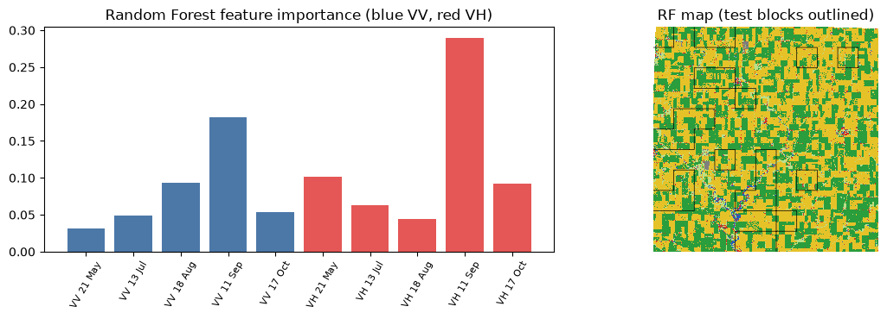
CNN architectures and the mathematics behind them
build_cnn(arch, in_channels, num_classes, pretrained=False, first_conv="mean", dropout=None, **kwargs) returns a model whose first layer is rebuilt for \(C=10\) input channels (2 polarisations \(\times\) 5 dates). With pretrained=True the RGB weights of the first convolution are averaged (first_conv="mean") and replicated over the extra bands, a standard way to reuse ImageNet features for multi-channel data (here the channels are backscatter images, which look little like photographs, so ImageNet weights are of doubtful value). Here we train from scratch, which is common for small chips where the ImageNet prior is less useful. For ViT, image_size must match the chip size (image_size=32).
Family
arch
Core idea
LeNet
lenet
two conv + pool stages, three fully connected layers
with \(k^2C_{in}C_{out}+C_{out}\) parameters. Batch normalisation standardises each channel over the mini-batch, \(\hat z=(z-\mu_B)/\sqrt{\sigma_B^2+\epsilon}\), then applies a learned scale and shift, \(y=\gamma\hat z+\beta\). Activations are \(\mathrm{ReLU}(z)=\max(0,z)\) or \(\mathrm{GELU}(z)=z\,\Phi(z)\). Every classifier ends with global average pooling \(\bar a_c=\frac1{HW}\sum_{i,j}A_c(i,j)\), a linear layer \(\mathbf s=W\bar{\mathbf a}+\mathbf b\) and the softmax \(p_k=e^{s_k}/\sum_m e^{s_m}\).
For the \(32\times32\) chip: \(32\xrightarrow{\text{conv},p=2}32\xrightarrow{\text{pool}}16\xrightarrow{\text{conv}}12\xrightarrow{\text{pool}}6\), then adaptive pooling to \(5\times5\) gives \(16\cdot5\cdot5=400\) features. Parameters with \(C=10\), \(K=6\):
Two pooling stages give a receptive field of only 16 px: it cannot “see” the whole chip through convolution alone (coverage 0.5; see Parameters and receptive field in notebook 09_09_02_03). The large fully connected layer, not the convolutions, holds 98 % of the parameters.
VGG replaces large filters by stacks of \(3\times3\) convolutions. Two stacked \(3\times3\) layers see a \(5\times5\) neighbourhood, three see \(7\times7\), but with fewer parameters and more non-linearities: \(2\cdot(3^2C^2)=18C^2<25C^2\) for one \(5\times5\) layer. A block is
with the channel width doubling per block. vgg_small uses widths \((32,64,128)\) and simple_cnn widths \((16,32)\), each followed by global average pooling, dropout and one linear layer. Because global average pooling replaces the huge VGG fully connected head, they are tiny: 290 k and 18 k parameters. The receptive field of vgg_small is 36 px, i.e. it covers the whole \(32\times32\) chip.
ResNet (resnet18/34/50/101)
Plain deep networks become hard to optimise because gradients vanish. ResNet adds an identity shortcut so each block learns a residual:
The identity term gives gradients a direct path to early layers. The basic block (ResNet-18/34) is \(\mathcal F=\mathrm{BN}(W_2*\mathrm{ReLU}(\mathrm{BN}(W_1*\mathbf x)))\) with two \(3\times3\) convolutions, followed by ReLU after the addition. ResNet-50/101 use a bottleneck\(1{\times}1\,(C\to C/4)\to3{\times}3\to1{\times}1\,(C/4\to C)\) to cut the cost. When the shape changes, the shortcut is a strided \(1\times1\) convolution \(W_s\mathbf x\). ResNet-18 has 8 basic blocks in 4 stages (widths 64, 128, 256, 512; 11.2 M parameters), ResNet-34 has 16 (21.3 M). The ImageNet stem (stride-2 \(7\times7\) convolution + max pool) downsamples by 4 immediately, so on a 32 px chip the last stage works on a \(1\times1\) map: the network is very deep for such small inputs, which explains why ResNet-34 is not better than ResNet-18 here.
EfficientNet is built from MBConv blocks: an inverted bottleneck with a depth-wise separable convolution and squeeze-and-excitation (SE) channel attention. A standard \(k\times k\) convolution costs \(k^2C_{in}C_{out}\) multiply-adds per pixel; the separable version splits it into a depth-wise \(k\times k\) convolution (one filter per channel) and a point-wise \(1\times1\) convolution:
An MBConv block expands channels by a factor \(t\) (\(1{\times}1\)), applies the depth-wise convolution, rescales channels by the SE gate \(\mathbf g=\sigma\big(W_2\,\mathrm{SiLU}(W_1\,\bar{\mathbf a})\big)\) with \(\bar{\mathbf a}\) the global average of each channel, projects back (\(1{\times}1\)) and adds a residual connection when shapes match. SiLU is \(z\,\sigma(z)\). Compound scaling grows depth \(d=\alpha^\phi\), width \(w=\beta^\phi\) and resolution \(r=\gamma^\phi\) together under \(\alpha\beta^2\gamma^2\approx2\), so that the cost roughly doubles per unit of \(\phi\). B0 has only 4 M parameters but is slower per step than ResNet-18 because depth-wise convolutions use the GPU poorly.
ConvNeXt (convnext_tiny/small/base)
ConvNeXt modernises a ResNet with design choices borrowed from transformers: a “patchify” stem (stride-4 \(4\times4\) convolution), a \(7\times7\) depth-wise convolution, LayerNorm instead of batch norm, an inverted bottleneck MLP with GELU, and residual connections. One block is
where \(\gamma\) is a learnable per-channel layer scale. LayerNorm normalises over the channel dimension of every pixel, \(\hat z=(z-\mu)/\sqrt{\sigma^2+\epsilon}\), so it does not depend on the batch size. ConvNeXt-tiny has stages of depth \((3,3,9,3)\) and widths \((96,192,384,768)\) (\(27.8\) M parameters). It matches transformers in large-data regimes but needs more data than a small chip set offers.
Vision Transformer (vit_b_16, vit_b_32)
ViT drops convolution almost entirely. The image is cut into non-overlapping \(P\times P\) patches, each flattened and linearly projected to a \(d\)-dimensional token; a learnable class token is prepended and position embeddings \(\mathbf E_{pos}\) are added:
The class token after the last layer feeds the linear classifier. Every token attends to every other token, so the receptive field is global from the first layer, but there is no built-in locality or translation equivariance, so ViT needs a lot of data. With \(P=16\) a \(32\times32\) chip yields only \(n=4\) tokens, and ViT-B has 87 M parameters: it is the heaviest and the least suited model here.
Swin Transformer (swin_t/s, swin_v2_t)
Swin keeps the transformer but makes it hierarchical and local. Attention is computed within non-overlapping windows of \(M\times M\) tokens, so the cost is linear in the number of tokens \(N\) instead of quadratic:
Successive layers shift the window grid by \(\lfloor M/2\rfloor\) so information flows across windows. Attention gets a learned relative position bias \(B\):
\[\mathrm{Attn}=\mathrm{softmax}\!\Big(\frac{\mathbf Q\mathbf K^{\top}}{\sqrt{d_k}}+B\Big)\mathbf V .\]
Between stages, patch merging concatenates \(2\times2\) neighbouring tokens and projects \(4C\to2C\), halving the resolution like a CNN pooling layer. Swin-T uses a \(4\times4\) patch embedding, depths \((2,2,6,2)\) and \(27.5\) M parameters. The hierarchy gives it the multi-scale features of a CNN; on a 32 px chip, however, the token grid is only \(8\times8\) and shrinks to \(1\times1\).
What the architectures share
Convolutional nets (LeNet, VGG, ResNet, EfficientNet, ConvNeXt) carry the prior that nearby pixels matter and that features repeat across the image (translation equivariance, \(f(T\mathbf x)=Tf(\mathbf x)\)). That prior is a strong advantage with 13 k small training chips.
Residual connections (ResNet, EfficientNet, ConvNeXt, ViT, Swin) make deep stacks trainable.
Normalisation is batch norm in VGG/ResNet/EfficientNet and LayerNorm in ConvNeXt/ViT/Swin.
Transformers trade the convolutional prior for global attention and need more data or pre-training.
Cost grows from 18 k parameters (simple_cnn) to 87 M (vit_b_16), so more parameters are only worthwhile if the task is hard.
Parameters and receptive field
count_parameters(model) counts trainable weights. receptive_field(model, input_size=) follows the conv/pool path and returns the receptive field \(r\) and the jump \(j\) (output stride) by the recursion
and the coverage\(\min(1,r/\text{input size})\). A coverage below 1 means the final convolutional features cannot see the whole chip (LeNet: 16 of 32 px). Receptive fields far above 32 px (ResNet-18: 1,891 px) simply mean that the last layers see the whole padded chip. For transformers the value reflects only the patch embedding; attention is global by construction, so it is not meaningful there.
Code
NC = X.shape[1] # number of input channels (10)# the nine architectures to compareARCHS = [("lenet", {}), ("simple_cnn", {}), ("vgg_small", {}), ("resnet18", {}), ("resnet34", {}), ("efficientnet_b0", {}), ("convnext_tiny", {}), ("vit_b_16", {"image_size": 32}), ("swin_t", {})]rows = [] # one row per architecturefor a, kw in ARCHS: # each one m = ic.build_cnn(a, in_channels=NC, num_classes=K, **kw) # build it for ten channels and six classestry: rf_ = ic.receptive_field(m, input_size=SIZE) # theoretical receptive field on a 32 px chip rf_s, cov =int(rf_["rf"]), rf_["coverage"] # its size and coverage of the chipexceptException: rf_s, cov =None, None# not available for this architecture# size and receptive field rows.append({"arch": a, "parameters": ic.count_parameters(m), "receptive field (px)": rf_s, "coverage of chip": cov})arch_tab = pd.DataFrame(rows).set_index("arch") # as a tableprint(arch_tab.to_string()) # show itx = torch.randn(4, NC, SIZE, SIZE) # a random batch of four chips# every model returns (4, 6) scoresprint("forward pass OK for all:", all(ic.build_cnn(a, in_channels=NC, num_classes=K, **kw).eval()(x).shape == (4, K) for a, kw in ARCHS))
Satellite images have no intrinsic “up”: a field rotated by 90° is still a valid field. All 8 elements of the dihedral group \(D_4\) (4 rotations \(\times\) optional flip) are therefore label-preserving, in contrast to street-level photographs where only horizontal flips are. OverheadAugment(dihedral=True, brightness, contrast, noise, crop, p, seed) is used as the transform of ChipDataset; radiometric jitter (brightness, contrast, noise) should be used with care on calibrated backscatter, where a brightness shift would be read as a change of crop biomass.
CutMix (Yun et al., 2019) pastes a rectangular patch of chip \(B\) into chip \(A\) and mixes the labels in proportion to the patch area:
with \(\lambda\) adjusted to the exact pixel area of the paste. The loss becomes \(\lambda\,\mathcal L(f(\tilde{\mathbf x}),y_A)+(1-\lambda)\,\mathcal L(f(\tilde{\mathbf x}),y_B)\). cutmix(images, targets, alpha, rng) returns (mixed, y_a, y_b, lam); train_model(..., cutmix_prob=p) applies it internally.
SAR caveat. A radar looks to the side (here to the right of an ascending track), so layover, shadow and the incidence angle depend on the direction. A \(90^\circ\) rotation of a whole scene would change the look direction, but at the scale of a 320 m chip of flat Corn Belt farmland the geometric effects are negligible and the dihedral group remains label-preserving. The same would not be true for mountainous terrain.
Code
i0 =int(np.where(y[tr] ==1)[0][5]) # a soybean training chipaug = ic.OverheadAugment(dihedral=True, p=1.0, seed=1) # the eight rotations and flipsbase = ic.ChipDataset(X[tr][i0:i0 +1], y[tr][i0:i0 +1], normalizer=norm) # that chip, normalisedimg0 = base[0]["image"] # its tensorvh_aug = [NC -3, NC -2, NC -1] # last three VH dates (Aug, Sep, Oct) as RGBdef show(t): # tensor -> displayable RGB of three VH dates# stretch to 0-1, bands last a = t.numpy()[vh_aug]; a = (a - a.min()) / (a.max() - a.min() +1e-9);return np.moveaxis(a, 0, -1)fig, ax = plt.subplots(2, 5, figsize=(11, 4.6)) # the panelsax[0, 0].imshow(show(img0)); ax[0, 0].set_title("original") # the originalfor k inrange(1, 8): # seven random dihedral versions t, _ = aug(img0.clone(), None); a = ax.flat[k]; a.imshow(show(t)); a.set_title(f"dihedral #{k}")rng = np.random.default_rng(0) # random generatorj_corn =int(np.where(y[tr] ==0)[0][3]) # a corn chip# the soybean and corn chipsxb = torch.stack([base[0]["image"], ic.ChipDataset(X[tr][[j_corn]], y[tr][[j_corn]], normalizer=norm)[0]["image"]])mixed, ya, yb, lam = ic.cutmix(xb.clone(), torch.tensor([1, 0]), alpha=1.0, rng=rng) # CutMix of the two# chip A and the mixed chipax.flat[8].imshow(show(xb[0])); ax.flat[8].set_title("A: soybeans"); ax.flat[9].imshow(show(mixed[0])); ax.flat[9].set_title(f"CutMix, lam={float(lam):.2f}")for a in ax.flat: a.axis("off") # no axesplt.tight_layout(); plt.show() # arrange and draw
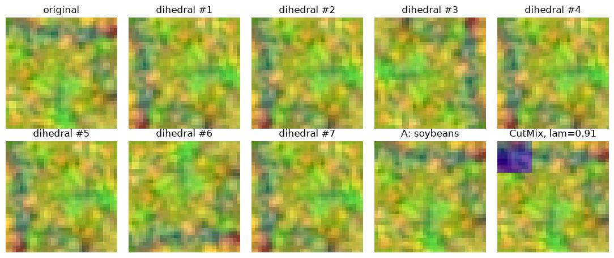
Loss functions: cross-entropy, weighted, focal and label smoothing
For logits \(\mathbf z\) and softmax probabilities \(p_k=e^{z_k}/\sum_j e^{z_j}\) with one-hot target \(y\):
Weighted CE:\(\mathcal L=-w_y\log p_y\) with \(w\) from class_weights; minority errors cost more.
Label smoothing\(\varepsilon\): replace the one-hot target by \((1-\varepsilon)\,\mathbb 1_y+\varepsilon/K\), giving \(\mathcal L=-(1-\varepsilon)\log p_y-\frac{\varepsilon}{K}\sum_k\log p_k\). It prevents over-confident logits and helps when the labels are noisy; CDL is itself a model product with about 5-15 % class-specific error, so some label noise is certain.
Focal loss (Lin et al., 2017): \(\mathcal L_{\text{focal}}=-\alpha_y\,(1-p_y)^{\gamma}\log p_y\). The modulating factor \((1-p_y)^\gamma\) down-weights easy examples (\(p_y\to1\)) so that training focuses on hard, often minority-class examples; \(\gamma=2\) is the usual choice.
All losses accept \((N,C)\) logits with \((N,)\) targets. Quick numerical check on one batch:
Code
zb = torch.randn(256, K) *2; yb_ = torch.randint(0, K, (256,)) # random scores and labels for 256 samplescw = W_["sqrt_inverse"] # square-root inverse class weightslosses = {"ce": ic.get_loss("ce"), "weighted_ce": ic.get_loss("weighted_ce", class_weights=cw), # five losses"focal (g=2)": ic.get_loss("focal", gamma=2.0), "focal + weights": ic.get_loss("focal", gamma=2.0, class_weights=cw),"label smoothing 0.1": ic.get_loss("ce", label_smoothing=0.1)}print({k: round(float(f(zb, yb_)), 4) for k, f in losses.items()}) # loss of each on the same batchp = torch.linspace(0.01, 0.99, 99) # probabilities of the true classplt.figure(figsize=(5.5, 3.4)) # one panel# focal loss for several gamma valuesfor g in (0, 0.5, 1, 2, 5): plt.plot(p, -(1- p) ** g * torch.log(p), label=f"gamma={g}")# labels, title, legend and drawplt.xlabel("p of true class"); plt.ylabel("loss"); plt.title("Focal loss (gamma=0 is CE)"); plt.legend(); plt.tight_layout(); plt.show()
Training and experiments: architectures, SAR inputs, augmentation and losses
The training loop: train_model
train_model(model, train_loader, val_loader, task="classification", epochs, loss, optimizer, lr, weight_decay, scheduler, precision, grad_clip, early_stopping, monitor, checkpoint, seed, num_classes, cutmix_prob, logger, log_dir, ...) is an explicit PyTorch loop that implements:
AdamW (decoupled weight decay): \(\theta\leftarrow\theta-\eta\Big(\dfrac{\hat m_t}{\sqrt{\hat v_t}+\epsilon}+\lambda\theta\Big)\) with first/second moment estimates \(m_t,v_t\);
Cosine schedule:\(\eta_t=\tfrac12\eta_0\big(1+\cos(\pi t/T)\big)\), annealing the learning rate smoothly to zero; onecycle, step and plateau are alternatives;
Mixed precision (precision="16" with gradient scaling, or "bf16"): forward/backward in half precision on the GPU for speed and memory, master weights in float32;
Gradient clipping:\(\mathbf g\leftarrow\mathbf g\cdot\min\!\big(1,\,c/\lVert\mathbf g\rVert_2\big)\) with \(c\) = grad_clip;
Early stopping on monitor (val_loss or val_score = accuracy) with patience, and restoring of the best weights;
Checkpoint of the best state and logging to TensorBoard (or W&B, MLflow, or any callable).
It returns a history dict (train_loss, val_loss, val_score, lr). The helper below wraps one experiment: it builds the datasets, trains, and scores the test blocks. Model selection uses the validation set only; the test set is touched once per run for reporting.
Code
def prob_to_report(P, yt, n_boot=0): # accuracy report from class probabilities# most probable class against the labelsreturn ic.classification_report(yt, P.argmax(1), labels=list(range(K)), class_names=dict(enumerate(CLASSES)), n_boot=n_boot, seed=0)NORMS = {} # normalisers per input version and channel set# train one model and score itdef fit(arch, *, seed=0, epochs=12, loss="ce", aug=None, cutmix=0.0, lr=1e-3, wd=1e-4, kw=None, precision="16", cw=None, label_smoothing=0.0, early=None, checkpoint=None, logger=None, log_dir=None, tta=False, variant="mt", chan=None):"""Train one model. `variant` picks the input processing (mt/lee/raw), `chan` a subset of the 10 channels.""" ic.set_seed(seed) # same initial weights for a given seed ch =list(range(NC)) if chan isNoneelselist(chan) # channels to use (all by default) Xv = XV[variant][:, ch] # chips of the chosen version and channels key = (variant, tuple(ch)) # cache key of the normaliserif key notin NORMS: # not fitted yet NORMS[key] = ic.Normalizer("zscore").fit(Xv[tr], band_axis=1) # fit it on the training chips nm = NORMS[key] # the normaliser# chip dataset of indices idx mk_ =lambda idx, tf=None: ic.ChipDataset(Xv[idx], y[idx], normalizer=nm, transform=tf)# optional rotation and flip augmentation tf =Noneif aug isNoneelse ic.OverheadAugment(dihedral=True, p=1.0, seed=seed) ltr = ic.as_loader(mk_(tr, tf), 128, shuffle=True, seed=seed) # shuffled training batches# validation and test batches lva, lte = ic.as_loader(mk_(va), 256, shuffle=False), ic.as_loader(mk_(te), 256, shuffle=False) model = ic.build_cnn(arch, in_channels=len(ch), num_classes=K, **(kw or {})) # the network lf = ic.get_loss(loss, class_weights=cw, label_smoothing=label_smoothing) # the loss t0 = time.time() # start the timer# the GeoLattice training loop hist = ic.train_model(model, ltr, lva, task="classification", epochs=epochs, loss=lf, optimizer="adamw", lr=lr, weight_decay=wd, scheduler="cosine", precision=precision if DEVICE =="cuda"else"32", grad_clip=1.0, early_stopping=early, monitor="val_score", checkpoint=checkpoint, seed=seed, num_classes=K, cutmix_prob=cutmix, logger=logger, log_dir=log_dir, device=DEVICE, verbose=False) sec = time.time() - t0 # training time Pv = ic.predict_proba_batches(model, lva, device=DEVICE) # validation probabilities# test probabilities (optionally with test-time augmentation) Pt = ic.predict_proba_batches(model, lte, device=DEVICE, tta=tta)# model, history, time, scores and normaliserreturndict(model=model, hist=hist, sec=sec, val_acc=float((Pv.argmax(1) == y[va]).mean()), test_acc=float((Pt.argmax(1) == y[te]).mean()), P=Pt, norm=nm)
Benchmarking the nine architectures under one recipe
Every architecture is trained with the same recipe (AdamW, lr \(10^{-3}\), cosine, AMP, grad-clip 1, plain CE, no augmentation) on the multi-temporal-filtered 10-channel chips for a fixed number of epochs, with one seed per architecture; the seeds are repeated for the ablations that follow. Parameters and receptive field are from the Parameters and receptive field section.
Code
# smaller learning rates for transformers and ConvNeXtlr_by = {"vit_b_16": 3e-4, "swin_t": 3e-4, "convnext_tiny": 5e-4}res_arch, rows = {}, [] # results and rowsfor a, kw in ARCHS: # each architecture r = fit(a, seed=0, epochs=EPOCHS_ARCH, lr=lr_by.get(a, 1e-3), kw=kw) # train it res_arch[a] = r # keep it rep_a = prob_to_report(r["P"], y[te]) # its test report# size, speed and accuracy rows.append({"arch": a, "parameters": arch_tab.loc[a, "parameters"], "receptive field": arch_tab.loc[a, "receptive field (px)"],"sec/epoch": r["sec"] / EPOCHS_ARCH, "best val acc": max(r["hist"]["val_score"]), "test acc": r["test_acc"], "macro F1": rep_a["macro_f1"]})# progress lineprint(f"{a:16s} val {rows[-1]['best val acc']:.4f} test {r['test_acc']:.4f} ({r['sec']:.0f}s)")arch_res = pd.DataFrame(rows).set_index("arch").round(4) # as a tablearch_res # show it
lenet val 0.9899 test 0.9932 (14s)
simple_cnn val 0.9975 test 0.9961 (10s)
vgg_small val 0.9969 test 0.9939 (12s)
resnet18 val 0.9955 test 0.9939 (18s)
resnet34 val 0.9944 test 0.9927 (28s)
efficientnet_b0 val 0.9951 test 0.9941 (40s)
convnext_tiny val 0.9899 test 0.9884 (41s)
vit_b_16 val 0.9899 test 0.9884 (76s)
swin_t val 0.9874 test 0.9868 (80s)
parameters
receptive field
sec/epoch
best val acc
test acc
macro F1
arch
lenet
62716
16
0.9030
0.9899
0.9932
0.9736
simple_cnn
17958
16
0.6961
0.9975
0.9961
0.9975
vgg_small
290246
36
0.8104
0.9969
0.9939
0.9928
resnet18
11201542
1891
1.2300
0.9955
0.9939
0.9851
resnet34
21309702
4083
1.8639
0.9944
0.9927
0.9839
efficientnet_b0
4017250
851
2.6508
0.9951
0.9941
0.9911
convnext_tiny
27835494
1688
2.7152
0.9899
0.9884
0.9529
vit_b_16
87032070
16
5.0887
0.9899
0.9884
0.9695
swin_t
27534720
4
5.3564
0.9874
0.9868
0.9802
Code
fig, ax = plt.subplots(1, 3, figsize=(13, 3.8)) # three panelsfor a, r in res_arch.items(): # each architecture ax[0].plot(r["hist"]["val_score"], label=a) # its validation accuracy ax[1].plot(r["hist"]["train_loss"], label=a) # its training loss# titles, log scale and legendax[0].set_title("validation accuracy"); ax[1].set_title("training loss"); ax[1].set_yscale("log"); ax[0].legend(fontsize=7)for a in ax[:2]: a.set_xlabel("epoch") # epoch axesax[2].scatter(arch_res["parameters"], arch_res["test acc"], c="C0") # accuracy against size# architecture namesfor a, r in arch_res.iterrows(): ax[2].annotate(a, (r["parameters"], r["test acc"]), fontsize=7)# log axis, labels and titleax[2].set_xscale("log"); ax[2].set_xlabel("parameters"); ax[2].set_ylabel("test accuracy"); ax[2].set_title("accuracy vs. size")plt.tight_layout(); plt.show() # arrange and draw
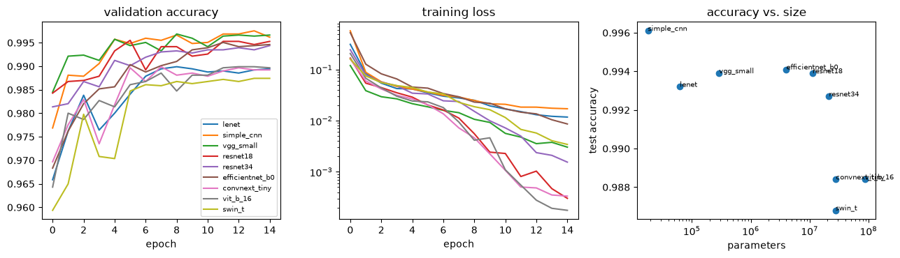
Which SAR information matters? Input ablations on ResNet-18 (mean ± SD over seeds)
We fix ResNet-18 and change only the input, repeating each configuration over seeds \(\{0,1,2\}\). Differences smaller than about one SD should not be interpreted.
Speckle treatment: raw dB, single-date Lee, multi-temporal Lee (the default).
Polarisation: VV only (5 channels), VH only (5 channels), both (10).
Date removed (leave-one-date-out): the drop in accuracy when one acquisition is withheld measures how much unique information that date carries.
Season so far (cumulative dates): how early in the season could a map have been made? With only the 21 May scene (bare soil, before emergence) the classes should be close to inseparable.
Code
VVc, VHc =list(range(T)), list(range(T, 2* T)) # VV and VH channel indicesdef drop_date(t): return [c for c inrange(NC) if c % T != t] # all channels except one datedef upto(n): return [c for c inrange(NC) if c % T < n] # only the first n datesabl_cfg = { # input variants of the ablation"raw dB (no filter)": dict(variant="raw"),"single-date Lee": dict(variant="lee"),"multi-temporal Lee (default)": dict(variant="mt"),"VV only": dict(chan=VVc),"VH only": dict(chan=VHc),}for t inrange(T): # each date ... abl_cfg[f"without {DLAB[t]}"] =dict(chan=drop_date(t)) # ... left out oncefor n inrange(1, T): # the first 1, 2, 3 and 4 dates abl_cfg[f"dates 1-{n} (to {DLAB[n -1]})"] =dict(chan=upto(n)) # ... (early-season maps)rows = [] # one row per runfor name, cfg in abl_cfg.items(): # each variantfor s in SEEDS: # each seed r = fit("resnet18", seed=s, epochs=EPOCHS_ABL, **cfg) # train ResNet-18 rrep = prob_to_report(r["P"], y[te]) # test report# the scores rows.append(dict(config=name, seed=s, val_acc=r["val_acc"], test_acc=r["test_acc"], macro_f1=rrep["macro_f1"], sec=r["sec"]))print(name, "done") # progressabl_in = pd.DataFrame(rows) # as a table# mean and spread per varianttab_in = abl_in.groupby("config", sort=False).agg(val_acc=("val_acc", "mean"), test_acc=("test_acc", "mean"), test_sd=("test_acc", "std"), macro_f1=("macro_f1", "mean"), macro_f1_sd=("macro_f1", "std")).round(4)tab_in # show it
raw dB (no filter) done
single-date Lee done
multi-temporal Lee (default) done
VV only done
VH only done
without 21 May done
without 13 Jul done
without 18 Aug done
without 11 Sep done
without 17 Oct done
dates 1-1 (to 21 May) done
dates 1-2 (to 13 Jul) done
dates 1-3 (to 18 Aug) done
dates 1-4 (to 11 Sep) done
val_acc
test_acc
test_sd
macro_f1
macro_f1_sd
config
raw dB (no filter)
0.9939
0.9933
0.0016
0.9802
0.0037
single-date Lee
0.9946
0.9936
0.0009
0.9663
0.0141
multi-temporal Lee (default)
0.9942
0.9919
0.0006
0.9763
0.0050
VV only
0.9823
0.9856
0.0024
0.8887
0.0473
VH only
0.9948
0.9934
0.0004
0.9600
0.0470
without 21 May
0.9934
0.9925
0.0010
0.9686
0.0112
without 13 Jul
0.9949
0.9968
0.0006
0.9829
0.0075
without 18 Aug
0.9942
0.9909
0.0024
0.9721
0.0082
without 11 Sep
0.9802
0.9792
0.0034
0.9416
0.0553
without 17 Oct
0.9930
0.9936
0.0006
0.8771
0.0189
dates 1-1 (to 21 May)
0.7333
0.7267
0.0109
0.6765
0.0596
dates 1-2 (to 13 Jul)
0.7952
0.7915
0.0030
0.7728
0.0156
dates 1-3 (to 18 Aug)
0.9665
0.9678
0.0008
0.9262
0.0797
dates 1-4 (to 11 Sep)
0.9930
0.9936
0.0006
0.8771
0.0189
Code
fig, ax = plt.subplots(1, 2, figsize=(13, 5.2)) # two panelsg = abl_in.groupby("config", sort=False) # runs grouped by variant# accuracy and macro F1for a, col, t in [(ax[0], "test_acc", "test accuracy"), (ax[1], "macro_f1", "macro F1")]: m_, s_ = g[col].mean(), g[col].std() # mean and spread cols = ["#9ecae1"if n.startswith(("raw", "single", "multi")) else"#fdae6b"if n.endswith("only") else"#a1d99b"if n.startswith("without") else"#bcbddc"for n in m_.index]# bars with names a.barh(range(len(m_)), m_, xerr=s_, color=cols); a.set_yticks(range(len(m_))); a.set_yticklabels(m_.index, fontsize=8)# limits, title, top-to-bottom order a.set_xlim(m_.min() -0.03, m_.max() +0.015); a.set_title(f"{t} (mean ± SD over seeds)"); a.invert_yaxis()plt.tight_layout(); plt.show() # arrange and draw
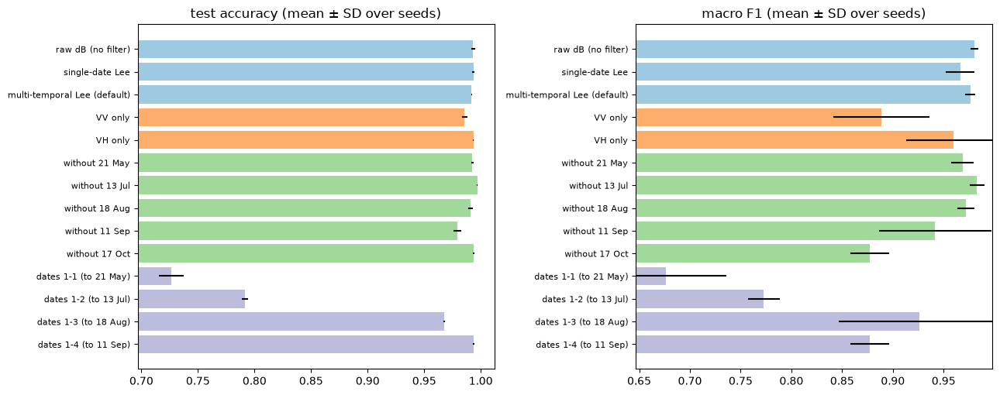
Augmentation and loss ablations on ResNet-18 (mean ± SD over seeds)
The same repeated-seed protocol, now varying one training ingredient at a time on the default multi-temporal-filtered input.
Code
CW = W_["sqrt_inverse"] # the class weights used belowconfigs = { # eight training variants of ResNet-18"baseline (CE)": dict(),"+ OverheadAugment": dict(aug=True),"+ CutMix (p=0.5)": dict(cutmix=0.5),"+ Aug + CutMix": dict(aug=True, cutmix=0.5),"weighted CE (sqrt-inv.)": dict(loss="weighted_ce", cw=CW),"focal (gamma=2)": dict(loss="focal"),"focal + weights": dict(loss="focal", cw=CW),"label smoothing 0.1": dict(label_smoothing=0.1),}rows = [] # one row per runfor name, cfg in configs.items(): # each variantfor s in SEEDS: # each seed# the augmentation flag -> an OverheadAugment class c =dict(cfg); c["aug"] = ic.OverheadAugment if c.pop("aug", False) elseNone r = fit("resnet18", seed=s, epochs=EPOCHS_ABL, **c) # train it rrep = prob_to_report(r["P"], y[te]) # test report# the scores rows.append(dict(config=name, seed=s, val_acc=r["val_acc"], test_acc=r["test_acc"], macro_f1=rrep["macro_f1"], sec=r["sec"]))print(name, "done") # progressabl = pd.DataFrame(rows) # as a table# mean and spread per varianttab = abl.groupby("config", sort=False).agg(val_acc=("val_acc", "mean"), test_acc=("test_acc", "mean"), test_sd=("test_acc", "std"), macro_f1=("macro_f1", "mean"), macro_f1_sd=("macro_f1", "std"), sec=("sec", "mean")).round(4)tab # show it
fig, ax = plt.subplots(1, 2, figsize=(12, 3.8)) # two panels# test accuracy and macro F1for a, col, t in [(ax[0], "test_acc", "test accuracy"), (ax[1], "macro_f1", "macro F1")]: g = abl.groupby("config", sort=False)[col] # runs grouped by variant a.barh(range(len(g.mean())), g.mean(), xerr=g.std(), color="#4c78a8"); a.set_yticks(range(len(g.mean()))); a.set_yticklabels(g.mean().index)# limits, title, top-to-bottom order a.set_xlim(g.mean().min() -0.03, g.mean().max() +0.02); a.set_title(f"{t} (mean ± SD over seeds)"); a.invert_yaxis()plt.tight_layout(); plt.show() # arrange and draw
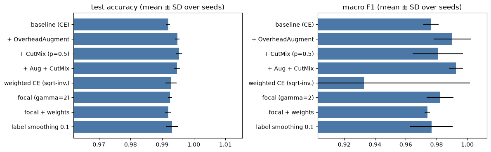
Final model: early stopping, checkpoint and TensorBoard
We train the final model with everything switched on: AdamW + cosine schedule, mixed precision, gradient clipping, early stopping (patience 6 on validation accuracy), best-weights checkpoint and TensorBoard logging (guarded in case it is not installed). The best training configuration in the Augmentation and loss ablations on ResNet-18 (mean ± SD over seeds) section is selected on the validation accuracy (not the test accuracy) and the final training is longer than the ablation runs.
Code
# the variant with the best validation accuracybest_cfg = abl.groupby("config", sort=False)["val_acc"].mean().idxmax()print("config selected on validation accuracy:", best_cfg) # report it# its settingscfg =dict(configs[best_cfg]); cfg["aug"] = ic.OverheadAugment if cfg.pop("aug", False) elseNonetry:import tensorboard # noqa LOGGER ="tensorboard"# TensorBoard is installedexceptImportError: LOGGER =None# no loggerOUT = Path(tempfile.mkdtemp(prefix="s1_cnn_")) # a temporary output folderCKPT = OUT /"resnet18_best.pt"# the checkpoint file# train the final model with early stopping and a checkpointfinal = fit("resnet18", seed=SEED, epochs=int(30* SCALE) if DEVICE =="cuda"else6, early=6, checkpoint=CKPT, logger=LOGGER, log_dir=str(OUT /"tb"), **cfg)h = final["hist"] # its history# epochs, scores and checkpoint sizeprint(f"stopped after {len(h['val_score'])} epochs | best val acc {max(h['val_score']):.4f} | test acc {final['test_acc']:.4f} | "f"checkpoint {CKPT.name} ({CKPT.stat().st_size /1e6:.1f} MB) | logger: {LOGGER}")# the TensorBoard filesprint("TensorBoard event files:", sorted(p.name for p in (OUT /"tb").rglob("events*"))[:2] if LOGGER else"n/a")fig, ax = plt.subplots(1, 3, figsize=(13, 3.4)) # three panels# loss curvesax[0].plot(h["train_loss"], label="train"); ax[0].plot(h["val_loss"], label="val"); ax[0].set_title("loss"); ax[0].legend()# validation accuracy and learning rateax[1].plot(h["val_score"]); ax[1].set_title("validation accuracy"); ax[2].plot(h["lr"]); ax[2].set_title("learning rate (cosine)")for a in ax: a.set_xlabel("epoch") # epoch axesplt.tight_layout(); plt.show() # arrange and draw
config selected on validation accuracy: + Aug + CutMix
stopped after 18 epochs | best val acc 0.9984 | test acc 0.9952 | checkpoint resnet18_best.pt (44.9 MB) | logger: tensorboard
TensorBoard event files: ['events.out.tfevents.1795642927.zia207-ThinkPad-P16-Gen-1.93608.0']
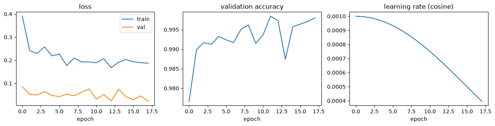
Restoring the model with load_checkpoint
load_checkpoint(model, path) loads the saved weights into a freshly built model of the same architecture and returns (model, missing_keys). A correct round trip reproduces the predictions exactly.
Code
fresh = ic.build_cnn("resnet18", in_channels=NC, num_classes=K) # a fresh ResNet-18fresh, missing = ic.load_checkpoint(fresh, CKPT) # load the saved weightsP_fresh = ic.predict_proba_batches(fresh, ld_te, device=DEVICE) # test probabilities of the reloaded model# missing keys and the largest differenceprint("load_state_dict:", missing, "| max |p_trained - p_reloaded| =", float(np.abs(P_fresh - final["P"]).max()))
Inference and evaluation: chips, wall-to-wall map and field boundaries
Chip-level evaluation: probabilities, TTA, bootstrap metrics and confusion matrix
predict_proba_batches(model, data, tta=False) returns softmax probabilities in batches; tta=True averages the 8 dihedral transforms (test-time augmentation), \(\bar p=\frac18\sum_{g\in D_4}p(g\cdot\mathbf x)\), the inference counterpart of OverheadAugment.
classification_report(y_true, y_pred, labels, class_names, n_boot) gives overall accuracy, Cohen’s \(\kappa\), macro-F1, per-class precision/recall/F1 and a bootstrap confidence interval (resampling test chips with replacement).
Because chips in a block are spatially autocorrelated, the bootstrap interval is somewhat optimistic; the SD over seeds in the Pixel-based baseline: Random Forest on the temporal profile section is a complementary uncertainty measure.
Code
P_plain = ic.predict_proba_batches(final["model"], ld_te, device=DEVICE) # test probabilities without TTA# and with the eight rotations and flips averagedP_tta = ic.predict_proba_batches(final["model"], ld_te, device=DEVICE, tta=True)yt = y[te] # test labels# accuracy report of the TTA predictionsrep = ic.classification_report(yt, P_tta.argmax(1), labels=list(range(K)), class_names=dict(enumerate(CLASSES)), n_boot=300, seed=0)# both accuraciesprint(f"plain OA {(P_plain.argmax(1) == yt).mean():.4f} | TTA (8 dihedral) OA {(P_tta.argmax(1) == yt).mean():.4f}")# headline scoresprint(f"overall accuracy {rep['overall_accuracy']:.4f} | kappa {rep['kappa']:.4f} | macro-F1 {rep['macro_f1']:.4f} | n = {rep['n']:,}")# bootstrap intervalsprint("bootstrap 95% CI:", {k: tuple(round(float(x), 4) for x in v) for k, v in rep["ci"].items()} ifisinstance(rep["ci"], dict) else rep["ci"])pc = rep["per_class"] # per-class scoresprint(pd.DataFrame(pc).round(3) ifnotisinstance(pc, pd.DataFrame) else pc.round(3)) # show them
plain OA 0.9952 | TTA (8 dihedral) OA 0.9952
overall accuracy 0.9952 | kappa 0.9903 | macro-F1 0.9916 | n = 4,400
bootstrap 95% CI: {'oa': (0.9934, 0.997), 'kappa': (0.9866, 0.994), 'macro_f1': (0.9782, 0.998)}
precision recall f1 support f1_ci_low f1_ci_high
Corn 0.995 0.997 0.996 2540 0.995 0.998
Soybeans 0.996 0.993 0.995 1828 0.992 0.997
Grass/pasture 0.969 1.000 0.984 31 0.945 1.000
Developed 0.000 NaN NaN 0 NaN NaN
Wetland/forest NaN 0.000 NaN 1 NaN NaN
Other NaN NaN NaN 0 NaN NaN
Code
cmx = np.asarray(rep["confusion_matrix"]) # the confusion matrixfig, ax = plt.subplots(1, 2, figsize=(11, 4.4)) # two panels# counts and row sharesfor a, M, t, f in [(ax[0], cmx, "counts", "d"), (ax[1], cmx / np.maximum(cmx.sum(1, keepdims=True), 1), "row-normalised (recall)", ".2f")]: im = a.imshow(M, cmap="Blues"); a.set_xticks(range(K)); a.set_yticks(range(K)) # the matrix# class names a.set_xticklabels(CLASSES, rotation=40, ha="right", fontsize=8); a.set_yticklabels(CLASSES, fontsize=8)for i inrange(K): # every cell ...for j inrange(K): # ...# its value a.text(j, i, format(M[i, j], f), ha="center", va="center", fontsize=7, color="w"if M[i, j] > M.max() /2else"k")# title and axis labels a.set_title(f"Confusion matrix, test chips - {t}"); a.set_xlabel("predicted"); a.set_ylabel("CDL (majority)")plt.tight_layout(); plt.show() # arrange and draw
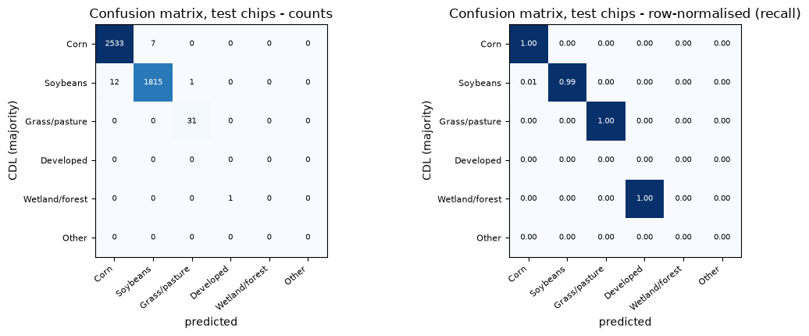
Wall-to-wall prediction map with predict_chip_map
predict_chip_map(model, image, size=, stride=, normalizer=, batch_size=) slides the chip classifier over a georeferenced image and assigns each pixel the class of the chip whose centre is nearest (stride 8 here; each pixel then comes from a chip centred within 4 px). Chips with NaN get nodata \(-1\) (radar has no clouds, so there are none here). The normaliser is the one fitted on the training chips. We also compare with the pixel Random Forest of the Pixel-based baseline: Random Forest on the temporal profile section on the same test pixels, which is the fair answer to what does the neighbourhood add? We evaluate the map only on pixels inside test blocks, comparing with the original 10 m CDL pixels (not the chip majority labels), which is the number a map user actually experiences.
Code
sub = IMG["mt"].isel(y=SUB, x=SUB) # the area covered by blockst0 = time.time() # start the timer# class map from a sliding 32 px windowpm = ic.predict_chip_map(final["model"], sub, size=SIZE, stride=8, normalizer=final["norm"], batch_size=512, device=DEVICE)pred = pm.values.astype(int);print(f"map {pred.shape} in {time.time() - t0:.0f} s") # as integers; timeis_te = in_te; ref_l = lab_s # test-block mask and reference labelsm = is_te & (pred >=0) & (ref_l >=0) # test pixels with a prediction and a labeloa_px = (pred[m] == ref_l[m]).mean() # pixel accuracy# pixel accuracy reportrep_px = ic.classification_report(ref_l[m], pred[m], labels=list(range(K)), class_names=dict(enumerate(CLASSES)), n_boot=0)rf_m = RF["mt"]["mask"] # the RF evaluation mask# CNN scoresprint(f"CNN (ResNet-18) pixel-level OA on test blocks vs. CDL: {oa_px:.4f} | kappa {rep_px['kappa']:.4f} | macro-F1 {rep_px['macro_f1']:.4f} | pixels {m.sum():,}")# RF scores on the same blocksprint(f"RF pixel baseline on the same blocks: OA {RF['mt']['rep']['overall_accuracy']:.4f} | kappa {RF['mt']['rep']['kappa']:.4f} | macro-F1 {RF['mt']['rep']['macro_f1']:.4f}")fig, ax = plt.subplots(1, 4, figsize=(20, 5.4)) # four panelssh =lambda a: np.where(a <0, np.nan, a) # negative ids as missingax[0].imshow(rgbimg[:nb * BLOCK, :nb * BLOCK]); ax[0].set_title("Sentinel-1 VH false colour") # VH composite# CDLax[1].imshow(sh(ref_l), cmap=cmap, vmin=-0.5, vmax=K -0.5, interpolation="nearest"); ax[1].set_title("CDL 2024")# RF mapax[2].imshow(sh(RF["mt"]["pred"]), cmap=cmap, vmin=-0.5, vmax=K -0.5, interpolation="nearest"); ax[2].set_title(f"pixel RF, test-block OA {RF['mt']['rep']['overall_accuracy']:.3f}")# CNN mapax[3].imshow(sh(pred), cmap=cmap, vmin=-0.5, vmax=K -0.5, interpolation="nearest"); ax[3].set_title(f"CNN map (ResNet-18), test-block OA {oa_px:.3f}")for a in ax: # every panel# no axes; test blocks outlined a.axis("off"); a.contour(is_te.astype(float), levels=[0.5], colors="k", linewidths=0.6)# class legendax[3].legend(handles=[plt.Rectangle((0, 0), 1, 1, color=c) for c in COLORS], labels=CLASSES, loc="lower center", ncol=3, fontsize=8, bbox_to_anchor=(0.5, -0.12))plt.tight_layout(); plt.show() # arrange and draw# per-class F1 of both mapspf = pd.DataFrame({"RF pixel F1": pd.Series(RF["mt"]["rep"]["per_class"]["f1"] ifisinstance(RF["mt"]["rep"]["per_class"], dict) else RF["mt"]["rep"]["per_class"]["f1"]).values,"CNN map F1": pd.Series(rep_px["per_class"]["f1"]).values}, index=CLASSES).round(3)print(pf.to_string()) # show it
map (2816, 2816) in 15 s
CNN (ResNet-18) pixel-level OA on test blocks vs. CDL: 0.8798 | kappa 0.7817 | macro-F1 0.4557 | pixels 1,563,711
RF pixel baseline on the same blocks: OA 0.8892 | kappa 0.8050 | macro-F1 0.5406
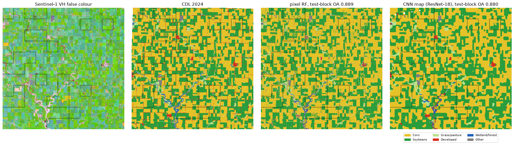
RF pixel F1 CNN map F1
Corn 0.932 0.924
Soybeans 0.932 0.914
Grass/pasture 0.549 0.441
Developed 0.207 0.053
Wetland/forest 0.498 0.358
Other 0.125 0.044
Where is the map wrong? Errors versus field boundaries
Code
err = np.where(m, (pred != ref_l).astype(float), np.nan) # 1 = wrong, 0 = right, NaN = not testedzoom = (slice(256*2, 256*5), slice(256*2, 256*5)) # a 3 x 3-block zoomfig, ax = plt.subplots(1, 4, figsize=(20, 5)) # four panels# CNN errorsax[0].imshow(err, cmap="Reds", vmin=0, vmax=1, interpolation="nearest"); ax[0].set_title("CNN errors in test blocks (red)")# CDL zoomax[1].imshow(sh(ref_l)[zoom], cmap=cmap, vmin=-0.5, vmax=K -0.5, interpolation="nearest"); ax[1].set_title("CDL (zoom)")# RF zoomax[2].imshow(sh(RF["mt"]["pred"])[zoom], cmap=cmap, vmin=-0.5, vmax=K -0.5, interpolation="nearest"); ax[2].set_title("pixel RF (zoom)")# CNN zoomax[3].imshow(sh(pred)[zoom], cmap=cmap, vmin=-0.5, vmax=K -0.5, interpolation="nearest"); ax[3].set_title("CNN (zoom)")for a in ax: a.axis("off") # no axesplt.tight_layout(); plt.show() # arrange and drawedge = np.zeros_like(ref_l, bool) # field boundaries in the CDL# pixels whose neighbour has another classedge[1:-1, 1:-1] = (ref_l[1:-1, 1:-1] != ref_l[:-2, 1:-1]) | (ref_l[1:-1, 1:-1] != ref_l[2:, 1:-1]) | (ref_l[1:-1, 1:-1] != ref_l[1:-1, :-2]) | (ref_l[1:-1, 1:-1] != ref_l[1:-1, 2:])from scipy.ndimage import binary_dilation # dilationnear = binary_dilation(edge, iterations=3) # a 3-pixel band around the boundariesrf_pred = RF["mt"]["pred"] # RF mapfor nm_, pr_, mm in [("CNN", pred, m), ("pixel RF", rf_pred, rf_m)]: # both maps# error rate near boundaries and inside fieldsprint(f"{nm_:9s} error rate within 3 px of a CDL boundary: {(pr_[mm & near] != ref_l[mm & near]).mean():.3f} | in field interiors: {(pr_[mm &~near] != ref_l[mm &~near]).mean():.3f}"f" | share of pixels near a boundary {(mm & near).sum() / mm.sum():.2f}")
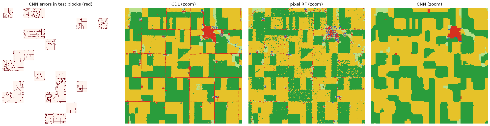
CNN error rate within 3 px of a CDL boundary: 0.385 | in field interiors: 0.012 | share of pixels near a boundary 0.29
pixel RF error rate within 3 px of a CDL boundary: 0.308 | in field interiors: 0.031 | share of pixels near a boundary 0.29
Summary of the experiments
Code
best_arch = arch_res["test acc"].idxmax() # the best architectureprint("Architectures (1 seed, plain CE, multi-temporal Lee input):") # header# architectures sorted by test accuracyprint(arch_res[["parameters", "sec/epoch", "best val acc", "test acc", "macro F1"]].sort_values("test acc", ascending=False).to_string())print("\nSAR input ablations on ResNet-18 (mean ± SD over", len(SEEDS), "seeds):") # headerprint(tab_in[["test_acc", "test_sd", "macro_f1", "macro_f1_sd"]].to_string()) # the input ablationsprint("\nTraining ablations on ResNet-18:") # headerprint(tab[["test_acc", "test_sd", "macro_f1", "macro_f1_sd"]].to_string()) # the training ablations# the pixel random forestprint(f"\nPixel Random Forest (test blocks, pixel level): OA {RF['mt']['rep']['overall_accuracy']:.4f}, macro-F1 {RF['mt']['rep']['macro_f1']:.4f}"f" | unfiltered input OA {RF['raw']['rep']['overall_accuracy']:.4f}")# the final modelprint(f"Final ResNet-18 ({best_cfg}): chip OA {rep['overall_accuracy']:.4f} (TTA), macro-F1 {rep['macro_f1']:.4f}; map pixel OA on test blocks {oa_px:.4f}")
Architectures (1 seed, plain CE, multi-temporal Lee input):
parameters sec/epoch best val acc test acc macro F1
arch
simple_cnn 17958 0.6961 0.9975 0.9961 0.9975
efficientnet_b0 4017250 2.6508 0.9951 0.9941 0.9911
resnet18 11201542 1.2300 0.9955 0.9939 0.9851
vgg_small 290246 0.8104 0.9969 0.9939 0.9928
lenet 62716 0.9030 0.9899 0.9932 0.9736
resnet34 21309702 1.8639 0.9944 0.9927 0.9839
convnext_tiny 27835494 2.7152 0.9899 0.9884 0.9529
vit_b_16 87032070 5.0887 0.9899 0.9884 0.9695
swin_t 27534720 5.3564 0.9874 0.9868 0.9802
SAR input ablations on ResNet-18 (mean ± SD over 3 seeds):
test_acc test_sd macro_f1 macro_f1_sd
config
raw dB (no filter) 0.9933 0.0016 0.9802 0.0037
single-date Lee 0.9936 0.0009 0.9663 0.0141
multi-temporal Lee (default) 0.9919 0.0006 0.9763 0.0050
VV only 0.9856 0.0024 0.8887 0.0473
VH only 0.9934 0.0004 0.9600 0.0470
without 21 May 0.9925 0.0010 0.9686 0.0112
without 13 Jul 0.9968 0.0006 0.9829 0.0075
without 18 Aug 0.9909 0.0024 0.9721 0.0082
without 11 Sep 0.9792 0.0034 0.9416 0.0553
without 17 Oct 0.9936 0.0006 0.8771 0.0189
dates 1-1 (to 21 May) 0.7267 0.0109 0.6765 0.0596
dates 1-2 (to 13 Jul) 0.7915 0.0030 0.7728 0.0156
dates 1-3 (to 18 Aug) 0.9678 0.0008 0.9262 0.0797
dates 1-4 (to 11 Sep) 0.9936 0.0006 0.8771 0.0189
Training ablations on ResNet-18:
test_acc test_sd macro_f1 macro_f1_sd
config
baseline (CE) 0.9919 0.0006 0.9763 0.0050
+ OverheadAugment 0.9948 0.0007 0.9902 0.0121
+ CutMix (p=0.5) 0.9954 0.0009 0.9809 0.0163
+ Aug + CutMix 0.9947 0.0009 0.9927 0.0045
weighted CE (sqrt-inv.) 0.9928 0.0018 0.9329 0.0690
focal (gamma=2) 0.9925 0.0006 0.9822 0.0086
focal + weights 0.9919 0.0009 0.9740 0.0017
label smoothing 0.1 0.9932 0.0018 0.9767 0.0138
Pixel Random Forest (test blocks, pixel level): OA 0.8892, macro-F1 0.5406 | unfiltered input OA 0.8349
Final ResNet-18 (+ Aug + CutMix): chip OA 0.9952 (TTA), macro-F1 0.9916; map pixel OA on test blocks 0.8798
Interpretation, caveats and recommended recipe
What the numbers say (one AOI, one year, one spatial split).
Chip-level accuracy is very high (about 99.5 %) but is an optimistic number. The test blocks contain 2,540 corn and 1,828 soybean chips, only 31 grass chips, one wetland chip and no developed or “other” chips, so the accuracy is essentially a corn-versus-soybean score on chips that are at least 60 % one class. The per-class F1 of the rare classes in this table is not estimable. Do not read it as a six-class accuracy.
The pixel-level test is the more honest one. Evaluated on every test-block pixel against the CDL, the ResNet-18 map reaches OA \(\approx 0.88\) (kappa \(\approx 0.78\), macro-F1 \(\approx 0.46\)), and the pixel Random Forest on the same blocks reaches OA \(\approx 0.89\) (kappa \(\approx 0.81\), macro-F1 \(\approx 0.54\)). In this experiment the CNN therefore did not beat the per-pixel RF at pixel level. The CNN is better inside fields (error rate about 1 % versus 3 % more than 3 px from a boundary) but worse within 3 px of a CDL boundary (about 39 % versus 31 %), because the chip-level model assigns one label per 32 px chip and predicts blocky, smoothed field edges, and because rare, small classes (developed, wetland, other) are almost never the majority of a chip. A segmentation network (notebook 09_09_04_01) is the right tool when boundaries matter.
Architectures are indistinguishable at chip level. Eight of the nine reach 98.7-99.6 % test accuracy with one seed; differences of a few tenths of a percent are within the seed-to-seed SD seen in the ablations (up to about 0.3 %). The smallest model (simple_cnn, 18 k parameters) is as good as ResNet-18 and about 5-8 times cheaper than the transformers, which have the lowest scores here. This is a small-image, two-dominant-class task; it says little about which architecture is better in general.
Season length matters far more than the architecture or filter. Using only the 21 May scene, accuracy is about 0.73; adding 13 July gives 0.79; adding 18 August gives 0.97, and adding 11 September gives 0.99. Corn and soybeans differ most in August-September (d’ about 1.4-2.3) and again in October (after harvest), and hardly at all in May and July (|d’| < 0.5). Removing 11 September is the most costly single-date removal (0.979 vs 0.992). The practical consequence is that in-season mapping before mid-August is not supported by this data set.
Polarisation. VH alone matches VV+VH (0.993 vs 0.992) while VV alone is worse (0.986, with a much lower macro-F1); VH is the more crop-sensitive channel. The SD of macro-F1 is large (up to 0.05-0.08) because of the tiny rare-class counts.
Speckle filtering. Filtering increased the equivalent number of looks from about 6-7 to 15-33 on pure fields (multi-temporal filter: 15-18) but gave no measurable gain in chip-level accuracy (raw 0.993, single-date Lee 0.994, multi-temporal Lee 0.992, all within about 2 SD). A CNN can learn its own averaging over a 32 px chip. For the pixel RF, in contrast, filtering was decisive (OA 0.835 raw to 0.889 filtered).
Training ingredients. Dihedral augmentation and CutMix improved the mean test accuracy by about 0.3 percentage points and macro-F1 by up to 1.6 points, more than the seed SD of about 0.1 points for accuracy, so they are worth keeping. Class weighting and focal loss did not help in accuracy, and weighted CE was less stable in macro-F1 (SD 0.07).
Caveats.
The label is the CDL, itself a model product (a decision-tree classifier fed with optical and other imagery), at roughly 85-95 % accuracy for corn and soybeans and much lower for minor classes. The CNN is partly learning to reproduce another classifier, and agreement with the CDL is not field-verified accuracy.
Same-scene spatial split. Blocks of 256 px (2.56 km) are separated, but all blocks come from one 30 × 30 km AOI and one year. Transfer to other regions or years was not tested; backscatter depends on weather, soil moisture and planting dates.
Five dates, one missing month. There is no June acquisition for 2024 and the May scene is from relative orbit 165 whereas the others are from orbit 63 (different incidence angle), so the May channels are not strictly comparable with the rest.
Rare classes (developed, wetland, other) have 0-1 chips in the test blocks, and their train/val counts are 20-250. Their metrics are not reliable.
Single seed for the architecture benchmark; the ablations use three seeds and show mean ± SD, but three seeds give only a rough SD.
Recommended recipe for this task. Use VH (or VV+VH) backscatter in dB from at least the August and September dates, filter with the multi-temporal Lee filter if you feed a per-pixel model, a small CNN or ResNet-18 with dihedral augmentation and CutMix for chip-level corn/soybean mapping, and move to a segmentation network when field boundaries and minor classes matter.